Reproducing the Local Indicator of Stratified Power (LISP) Model
A complete walkthrough of LISP — local indicator of stratified power — and
its LPI (Local Pattern Interaction) upgrade, which augments LISP with geocomplexity (GC)
patterns and pattern interactions, for spatially heterogeneous driver analysis, from raw data
to manuscript.
R/ pipeline scripts · data/processed/analysis-table.csv
(600-unit demo) · config/project-config.yaml — unzip, then run
Rscript R/00-setup.R from the LISP/ folder root.
Upload a CSV (ID, location, response, explanatory variables), press
Compute, and download the paper-style variogram, local-q and interaction figures with
their data tables. The app ships with a simulated example inside the paper's study-area
boundary; all computation stays on your device.
To cite the LISP model, its LPI upgrade, and their R packages and codes in publications, please use:
Hu J, Song Y, Zhang T (2024). A local indicator of stratified power.
IJGIS. doi ·
PDF
Sun Y, Wu G, Song Y, et al. (2026). Local effects of pattern interactions
in driving urbanization. Int J Appl Earth Obs Geoinf 146:105072.
doi ·
PDF
Song Y, Wang J, Ge Y, Xu C (2020). An optimal parameters-based geographical
detector model… GIScience & Remote Sensing 57(5):593–610.
doi ·
PDF
Luo P, Song Y, et al. (2022). …geographically optimal zones-based heterogeneity
model. ISPRS JPRS 185:111–128.
doi ·
PDF
Zhang Z, Song Y, Luo P, Wu P (2023). Geocomplexity explains spatial errors.
IJGIS 37(7):1449–1469.
doi ·
PDF
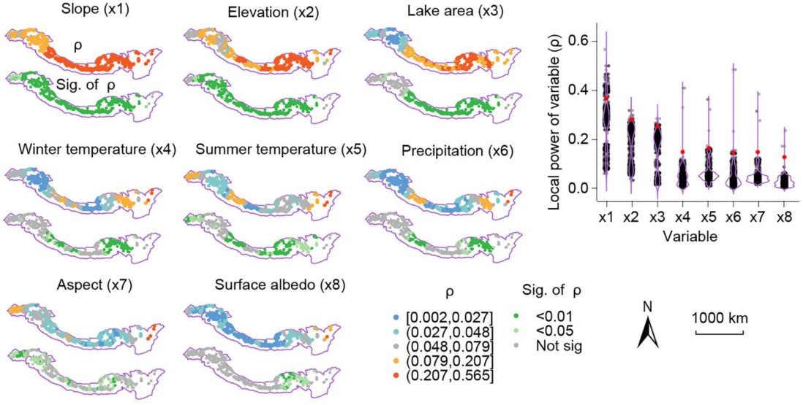
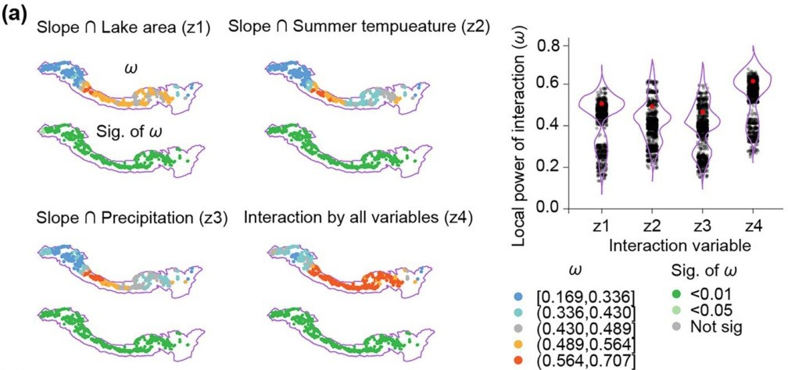
1 Method Overview & Reproduction Scope
1.1 Core Idea
Given an observed response variable y and explanatory variables
x1..xp recorded at n spatial units, the LISP (Local Indicator of
Stratified Power) model measures explanatory power locally — a q-statistic computed
inside each unit's own window — so driver effects that a global statistic averages away become
visible on a map. The LPI (Local Pattern Interaction) upgrade extends LISP with
geocomplexity: each variable's spatial pattern GC(x) joins the explanatory set, and pattern
interactions are typed and mapped. Together they answer four questions that a single global
statistic cannot:
Where does each variable explain the response? (local q-statistic maps)
Do the spatial patterns of the variables — their geocomplexity — explain the
response beyond the variable values themselves?
Which pairs of variables and patterns interact, of what type (enhance / weaken),
and where?
How much do all variables jointly explain at each location (GOZH total effect),
benchmarked against the global OPGD value?
Research problem: global q-statistics average away spatially varying driver
effects, and ignore the explanatory power carried by the spatial arrangement of each
variable.
One-line contribution: LISP makes stratified power local — a q-statistic
inside each unit's semivariogram-derived window (question 1); the LPI upgrade treats
each variable's geocomplexity pattern GC(x) as an additional explanatory variable and runs
the LISP machinery on the augmented set {x1..xp,
GC(x1)..GC(xp)} — adding typed pattern interactions and a
per-location joint ceiling (questions 2–4).
Why it matters: drivers and interactions that are globally non-significant can be
strong and significant in subregions; the demo below surfaces two such discoveries that a
global analysis would discard.
◆Reader anchor
Start by measuring explanatory power locally — where each driver acts (LISP). Then treat
the spatial pattern of every variable — how much its local arrangement contradicts spatial
dependence — as an explanatory variable in its own right (the LPI upgrade): where patterns
amplify drivers, and how much everything jointly explains at each place. Interactions then
come in three categories: variable × variable, variable × GC, and
GC × GC.
1.2 Method Logic
All power-of-determinant (PD) quantities in this family are variants of
q = 1 − SSW/SST (within-strata over total variance).
LISP is the core of this lineage — it makes stratified power local — and LPI is its
geocomplexity upgrade:
GD 2010geographical detector: global q per stratified variable Wang et al., IJGIScited
LISP 2024the core: makes stratified power local via semivariogram extents Hu et al., IJGIS · PDF
→
LPI 2026the upgrade: LISP over {variables ∪ GC patterns} + pattern interactions Sun et al., JAG · PDFCC BY
Key concepts and equations
Six building blocks drive the whole pipeline, one from each reference:
Stratified power (q-statistic): q = 1 − SSW/SST — the
share of response variance explained by a stratification; the quantity every later step
localises — Wang et al. (2010)
doi
Optimised discretisation: continuous variables are stratified by
parameter-optimised binning; the pipeline uses quantile bins
(discnum = 4) inside every local window — Song et al. (2020)
doi ·
PDF
GOZH total effect: a regression tree over all predictors zones the data, and the
combined-zone q of the leaf zones measures the joint explanatory ceiling —
Luo et al. (2022)
doi ·
PDF
Geocomplexity: Gi ∈ [0,1] measures how much a variable's
arrangement in the neighbourhood of unit i contradicts spatial dependence; LPI
treats each GC(x) as an additional explanatory variable — Zhang et al. (2023)
doi ·
PDF
Local extent and local q: the window radius d = 2a comes
from the range a of a semivariogram fitted to the response, and
q(u) = 1 − SSW/SST is computed inside each unit's window for every
variable and pattern — Hu et al. (2024)
doi ·
PDF
Pattern interactions: pairwise combined-zone q over {X, GC(X)}, typed into
the five geographical-detector classes and grouped into three categories
(X×X, X×GC, GC×GC) — Sun et al. (2026)
doi ·
PDF
1.3 Reproduction Scope
Everything tagged Demo run on this page regenerates from the scripts and data in this
folder; everything tagged Published reference is shown as a static comparison image or
table from the two source articles. The demo runs end to end with
R 4.6.0.
Item
Demo template
Published reference
Data
600 simulated point units, 6 predictors
(data/processed/analysis-table.csv, seed 42)
results/step08-validation-table.csv and robustness summaries,
regenerated by the scripts
LPI Table 4 and LISP Table 2, shown as excerpts beside the demo table in
§3.3
Figures
fig01–fig08 PDFs regenerated by R/11-figures.R (web copies in
assets/)
LPI Figs 3–10 and LISP Figs 2, 4–6, embedded as static reference
images
What the template regenerates versus what is shown as published reference.
Published applications of this exact pipeline
Application
Spatial unit
Response
Predictors
Status
Urbanization drivers, Shanxi–Henan–Hebei, China (Sun et al. 2026, LPI —
reference figures on this page)
County
Composite urbanization index (9 indicators, 5 dimensions)
5 economic variables + their 5 GC patterns
Published (JAG, CC BY)
Glacier thickness change of lake-terminating glaciers, Greater Himalayas
(Hu et al. 2024, LISP — reference figures on this page)
Gridded glacier unit
Observed thickness change 2000–2020 (direct)
8 climate, terrain and environment variables
Published (IJGIS)
Synthetic demonstration (this page — all demo outputs)
600 points
Observed response y (direct)
6 variables + 6 GC patterns
Reproducible demo
Two published applications share the pipeline; the synthetic demo makes it
reproducible without external data.
How to use this page
To reproduce the demo: this folder already contains everything — the R scripts
(R/), the configuration (config/), and the simulated example data
(data/processed/analysis-table.csv). Run the scripts in numbered order from the
folder root; every expected output is shown on this page so you can verify each step.
To apply LPI to your own problem: read §2.3 (data contract), edit the §2.2 config and
the real-data branch of the preparation script, then run the same scripts unchanged
(§4.1).
To write the paper: §4.2 gives the section skeleton used by the published
applications and maps every result file to its manuscript element.
2 Setup, Structure & Data Contract
2.1 Environment & Dependencies
The pipeline is pure R. The pipeline was run with R 4.6.0 and CRAN builds
of all packages; the complete environment of that run is recorded in
results/session-info.txt. Install everything with the setup script below, or
directly from the R console:
R console
install.packages(c("yaml", "sf", "sdsfun", "geocomplexity", "gdverse",
"FNN", "rpart", "automap", "dplyr",
"ggplot2", "reshape2", "mgcv", "scales", "patchwork",
"ggrepel", "localsp"))
# if localsp is unavailable on CRAN for your R version:
# remotes::install_github("stscl/localsp")
Package
Role in the pipeline
Required?
geocomplexity
geocd_vector() — GC pattern of each variable (Step 2)
yes
localsp
lisp() — LISP local factor detector (Step 4)
yes
gdverse
gd() — geographical-detector q for interactions and benchmarks (Steps 5–7)
Package roles. The three method packages (geocomplexity, localsp, gdverse) carry
the statistical core; the rest are infrastructure.
The setup script checks and installs every dependency, then records the session:
R/00-setup.R
# =============================================================================
# 00-setup.R — check and install required packages
# Run once: Rscript R/00-setup.R
# =============================================================================
cran_packages <- c(
"yaml", # config loading
"sf", # spatial data
"sdsfun", # spatial weights, discretize_vector
"geocomplexity", # geocd_vector — GC patterns
"gdverse", # gd() — geographical detector q-statistic
"FNN", # k-nearest neighbours
"rpart", # GOZH decision tree
"automap", # autofitVariogram — local range
"dplyr",
"parallel",
# figures
"ggplot2", "reshape2", "mgcv", "scales", "patchwork", "ggrepel"
)
# localsp provides lisp(), the LISP factor detector.
# If unavailable on CRAN for your R version, install from GitHub:
# remotes::install_github("stscl/localsp")
other_packages <- c("localsp")
missing <- setdiff(cran_packages, rownames(installed.packages()))
if (length(missing) > 0) {
cat("Installing:", paste(missing, collapse = ", "), "\n")
install.packages(missing)
}
for (pkg in other_packages) {
if (!pkg %in% rownames(installed.packages())) {
cat(sprintf("Package '%s' missing — trying CRAN, then GitHub.\n", pkg))
tryCatch(install.packages(pkg), error = function(e) NULL)
if (!pkg %in% rownames(installed.packages())) {
if (!"remotes" %in% rownames(installed.packages())) {
install.packages("remotes")
}
remotes::install_github(paste0("stscl/", pkg))
}
}
}
cat("\nAll packages present:\n")
for (pkg in c(cran_packages, other_packages)) {
ok <- requireNamespace(pkg, quietly = TRUE)
cat(sprintf(" %-14s %s\n", pkg, ifelse(ok, "OK", "MISSING")))
}
# Record the environment for reproducibility.
dir.create("results", showWarnings = FALSE)
writeLines(capture.output(sessionInfo()), "results/session-info.txt")
cat("\nSession info written to results/session-info.txt\n")
All packages present:
yaml OK
sf OK
sdsfun OK
geocomplexity OK
gdverse OK
...
localsp OK
Session info written to results/session-info.txt
!If localsp is not on CRAN for your R version
Install it from GitHub instead: remotes::install_github("stscl/localsp").
The pipeline was run with R 4.6.0 and CRAN builds of all packages (fresh installs needed
for yaml, automap, localsp).
2.2 Project Structure & Configuration
Every script runs from the folder root (Rscript R/03-geocomplexity.R), reads the
config plus the results/step*.csv files of earlier steps, and can therefore be
re-run in isolation at any time. Deleting results/ and figures/ and
re-running the scripts regenerates everything shown on this page.
folder tree
LISP/
├── lisp.html # this guide
├── assets/ # figures shown in this guide (web copies)
├── config/project-config.yaml # the ONLY file to edit for a new domain
├── data/processed/analysis-table.csv # simulated example data (600 units)
├── R/
│ ├── functions/ # method core: fn-config.R,
│ │ # fn-lpi-core.R, fn-plot-helpers.R
│ └── 00-setup.R … 11-figures.R # numbered pipeline scripts
├── results/ # step02–step10 CSVs + session-info.txt
└── figures/ # fig01–fig08 PDFs of the run
Main configuration file
config/project-config.yaml
# =============================================================================
# LPI project configuration — the single file to edit when porting the
# pipeline to a new domain. Every R script reads this file; none of them
# hard-code variable names, coordinates, or parameters.
#
# Method: LPI (Local Pattern Interaction) = LISP local stratified power
# + geocomplexity (GC) patterns + local interactions + GOZH total effect
# =============================================================================
project:
name: "lpi-application-template"
domain: "example" # short label for your application domain
crs_input: 4326 # CRS of the coordinates in the analysis table
crs_projected: 32650 # metric CRS for distance computation — EDIT
# to a projected CRS suited to your region
# (units must be metres; the demo data sit in
# UTM zone 50N = 32650)
data:
use_example: true # true = 01-prepare-data.R simulates a demo
# dataset so the pipeline runs end to end
# false = 01-prepare-data.R reads your raw data
# (edit that script for your source format)
analysis_table: "data/processed/analysis-table.csv"
boundary: "" # optional study-area boundary for maps, e.g.
# "data/boundary/study-area.gpkg" ("" = no boundary)
id_col: "uid"
x_col: "lon" # longitude / easting column in analysis table
y_col: "lat" # latitude / northing column in analysis table
response:
direct_col: "y" # observed response column in the analysis table
response_name: "z" # standard internal name used by the pipeline
predictors:
x_vars: ["x1", "x2", "x3", "x4", "x5", "x6"]
# Display labels used in every figure (keep short; GC labels are derived
# automatically as "GC(<label>)").
labels:
x1: "Variable 1"
x2: "Variable 2"
x3: "Variable 3"
x4: "Variable 4"
x5: "Variable 5"
x6: "Variable 6"
params:
gc: # Step 03 geocomplexity
knn_share: 0.02 # k = max(knn_min, knn_share * n)
knn_min: 30
method: "spvar" # geocomplexity::geocd_vector method
lisp: # Steps 04-05 local range + local q
threshold_multiplier: 2 # local extent = multiplier * variogram range
discnum: 4 # discretisation bins inside local windows
discmethod: "quantile"
interaction: # Step 06 local pairwise interactions
top_n_vars: 5 # pairs are formed among the top-N variables
# by mean local q (N=5 gives 10 pairs)
min_local_n: 10 # fallback neighbourhood size if the distance
# circle contains fewer points
global: # Step 08 global benchmark (OPGD-style)
n_strata: 5
top_n_interactions: 10
cores: "auto" # "auto" = detectCores() - 1, or an integer
validation:
holdout: # Step 09 subsample stability
n_repeats: 20
drop_share: 0.05
top_n_vars: 10
seed: 2026
sensitivity: # Step 10 parameter sensitivity
threshold_multipliers: [1.5, 2, 3]
discnums: [3, 4, 5]
top_n_vars: 5
figures:
# Fixed six-class palette for quantile-binned maps (colour-method mapping
# stays constant across all figures).
palette: ["#1F6B4A", "#4F9C93", "#8FC8BE", "#E6A8B6", "#D85A8E", "#8F1E5F"]
interaction_colors:
xx: "#1F6B4A" # X x X pairs
xgc: "#8FC8BE" # X x GC pairs
gcgc: "#8F1E5F" # GC x GC pairs
point_size: 0.6
width_single: 5 # inches, single-panel figures
width_full: 14 # inches, four-panel map rows
✓Single adaptation point
The config is the only file to edit when porting the pipeline to a new domain — no R
script hard-codes variable names, coordinates, or parameters. Every script loads it through
the shared loader below. When writing the manuscript, quote parameter values from this file,
never from memory.
R/functions/fn-config.R — shared loader, sourced by every script
# =============================================================================
# fn-config.R — configuration loader and small shared utilities
# All pipeline scripts source this file first and run from the project root.
# =============================================================================
load_config <- function(path = "config/project-config.yaml") {
if (!file.exists(path)) {
stop("Config not found at '", path,
"'. Run scripts from the project root, e.g. Rscript R/03-geocomplexity.R")
}
yaml::read_yaml(path)
}
get_cores <- function(cfg) {
if (identical(cfg$params$cores, "auto")) {
max(1L, parallel::detectCores() - 1L)
} else {
as.integer(cfg$params$cores)
}
}
ensure_dir <- function(path) {
dir.create(path, showWarnings = FALSE, recursive = TRUE)
invisible(path)
}
read_analysis_table <- function(cfg) {
path <- cfg$data$analysis_table
if (!file.exists(path)) {
stop("Analysis table not found at '", path,
"'. Run R/01-prepare-data.R first.")
}
read.csv(path)
}
# Column-name helpers -----------------------------------------------------
gc_names_of <- function(cfg) paste0("gc_", cfg$predictors$x_vars)
all_vars_of <- function(cfg) c(cfg$predictors$x_vars, gc_names_of(cfg))
# Named label vectors for figures: x labels from config, GC labels derived.
get_labels <- function(cfg) {
x_vars <- cfg$predictors$x_vars
x_labels <- unlist(cfg$predictors$labels)[x_vars]
gc_labels <- setNames(paste0("GC(", x_labels, ")"), gc_names_of(cfg))
c(x_labels, gc_labels)
}
# Read the response (with coordinates) produced by 02-response-intake.R
read_response <- function(cfg) {
path <- "results/step02-response.csv"
if (!file.exists(path)) {
stop("Response file not found at '", path,
"'. Run R/02-response-intake.R first.")
}
read.csv(path)
}
# Read the local extent estimated by 04-local-range.R
read_local_range <- function(cfg) {
path <- "results/step04-local-range.csv"
if (!file.exists(path)) {
stop("Local range file not found at '", path,
"'. Run R/04-local-range.R first.")
}
read.csv(path)
}
# Assemble the modelling frame: analysis table + response + geocomplexity.
# Every script from Step 05 onward starts from this call, so any script can
# be re-run in isolation without recomputing upstream steps.
build_model_frame <- function(cfg) {
d <- read_analysis_table(cfg)
rz <- read_response(cfg)
d[[cfg$response$response_name]] <- rz[[cfg$response$response_name]]
gc_path <- "results/step03-geocomplexity.csv"
if (file.exists(gc_path)) {
gc <- read.csv(gc_path)
for (v in gc_names_of(cfg)) d[[v]] <- gc[[v]]
}
d
}
Key parameters and where they come from
Parameter
Default
Origin / rationale
lisp$threshold_multiplier
2
LISP defines the local extent as d = 2 × semivariogram range (Hu et al. 2024); sensitivity in Step 9
lisp$discnum, discmethod
4, quantile
in-window discretisation used by both published applications; sensitivity in Step 9
gc$knn_share, knn_min
2%, 30
neighbourhood for GC and local GOZH: k = max(30, 0.02·n)
interaction$top_n_vars
5
pairs formed among top-N variables by mean local q (N=5 → 10 pairs) to keep the local loop tractable
global$n_strata
5
equal-interval strata for the OPGD-style global benchmark
Free parameters, their defaults, and the published rules they follow.
2.3 Data Contract
The whole pipeline consumes one analysis-ready table with one row per spatial unit. Units can
be anything point-referenced: counties (urbanization application), 1-km road segments, grid
cells (glacier application), stations, polygon centroids. Comfortable sample sizes are roughly
300 ≤ n ≤ 10,000; no missing values (the preparation script keeps complete
cases and documents any imputation).
Column
Config key
Type
Meaning
Required?
uid
data$id_col
integer / string
unique unit id
yes
lon, lat
data$x_col, data$y_col
numeric
coordinates in project$crs_input (demo: EPSG:4326)
yes
y
response$direct_col
numeric
the observed response variable (raw observation, one value per unit)
Required schema of data/processed/analysis-table.csv. Column names are
free — they are declared in the config, not hard-coded.
Example analysis-ready table
uid
lon
lat
y
x1
x2
x3
x4
x5
x6
1
116.915
36.448
0.789
−0.117
1.015
0.613
1.964
−1.468
−0.531
2
116.937
36.254
0.765
−0.562
0.067
−0.889
0.649
−1.189
−1.561
3
116.286
36.699
0.626
−0.895
0.618
1.723
−0.429
−1.287
0.291
4
116.830
36.273
0.680
−0.940
0.193
−0.532
0.446
−1.255
−1.272
First rows of the demo table. 600 rows total; y is the observed
response, taken as-is. Generated by the example branch of 01-prepare-data.R with
set.seed(42).
The synthetic ground truth (why the demo is a good test)
The demo generator plants a known spatial structure, so every downstream result can be checked
against a "right answer":
Two regimes: driver x1 dominates the west, x2 the east —
local q maps must recover this split (Step 4 does).
One planted interaction:x5 × x6 enters the response jointly —
interaction detection should rank pairs above single factors (Step 5 does).
Observed response:y is generated directly from the regimes, the
interaction term, and noise, then treated as a raw observation — no index construction
is involved in the demo.
Preparation script (demo mode + real-data mode)
R/01-prepare-data.R
# =============================================================================
# 01-prepare-data.R — build the analysis table
#
# Output: data/processed/analysis-table.csv with EXACTLY this schema:
# <id_col> unique unit id (config: data$id_col)
# <x_col> longitude or easting (config: data$x_col)
# <y_col> latitude or northing (config: data$y_col)
# y the observed response variable (config: response$direct_col)
# x1..xp the explanatory variables listed in predictors$x_vars
#
# Two modes (config: data$use_example):
# true — simulate a synthetic demo dataset so the whole pipeline runs
# end to end with no external data (recommended first run)
# false — adapt the marked section below to your own raw data
# =============================================================================
source("R/functions/fn-config.R")
cfg <- load_config()
ensure_dir("data/processed")
if (isTRUE(cfg$data$use_example)) {
# ---------------------------------------------------------------------------
# EXAMPLE MODE — synthetic spatial dataset (n = 600 point units)
# Design: two latent regimes (west/east) with different dominant drivers,
# so local q values genuinely vary across space; x5 x x6 carry a joint
# (interaction) signal; y is the directly observed response.
# ---------------------------------------------------------------------------
set.seed(42)
n <- 600
lon <- runif(n, 116.0, 117.0) # ~100 km east-west extent
lat <- runif(n, 36.0, 36.9)
east <- (lon - min(lon)) / diff(range(lon)) # 0 west -> 1 east
north <- (lat - min(lat)) / diff(range(lat))
smooth_field <- function(fx, fy, phase = 0, noise = 0.15) {
field <- sin(2 * pi * fx * east + phase) * cos(2 * pi * fy * north) +
0.5 * north
as.numeric(scale(field + rnorm(n, 0, noise)))
}
x1 <- smooth_field(1.0, 0.5)
x2 <- smooth_field(0.5, 1.0, phase = 1)
x3 <- smooth_field(1.5, 0.7, phase = 2)
x4 <- as.numeric(scale(east + rnorm(n, 0, 0.3)))
x5 <- smooth_field(0.8, 1.2, phase = 3)
x6 <- smooth_field(1.2, 0.4, phase = 4)
# Observed response: driver x1 dominates in the west, x2 in the east,
# x5*x6 adds a nonlinear-enhance interaction, x3 a weak global effect.
latent <- (1 - east) * 1.2 * x1 + east * 1.2 * x2 +
0.8 * x5 * x6 + 0.3 * x3 + rnorm(n, 0, 0.4)
y_obs <- (latent - min(latent)) / diff(range(latent))
d <- data.frame(
uid = seq_len(n),
lon = lon,
lat = lat,
y = y_obs,
x1 = x1, x2 = x2, x3 = x3, x4 = x4, x5 = x5, x6 = x6
)
write.csv(d, cfg$data$analysis_table, row.names = FALSE)
cat(sprintf("Example analysis table written: %s (%d rows)\n",
cfg$data$analysis_table, nrow(d)))
cat("Set data$use_example to false in config/project-config.yaml\n")
cat("and adapt this script once your own data are ready.\n")
} else {
# ---------------------------------------------------------------------------
# REAL-DATA MODE — adapt this section to your domain.
# Typical steps:
# 1. read raw files from data/raw/
# 2. aggregate to your spatial unit (grid cell, county, segment, station)
# 3. compute or join coordinates for each unit
# 4. rename columns to match config (id, coords, response, x_vars)
# 5. drop units with missing coordinates; document any imputation
# ---------------------------------------------------------------------------
raw_path <- "data/raw/raw-data.csv" # EDIT: your raw source file
if (!file.exists(raw_path)) {
stop("Real-data mode: expected raw data at '", raw_path,
"'. Edit R/01-prepare-data.R for your source format.")
}
raw <- read.csv(raw_path)
# EDIT from here: aggregation and renaming for your domain. The example
# below simply passes columns through and keeps complete rows.
needed <- c(cfg$data$id_col, cfg$data$x_col, cfg$data$y_col,
cfg$response$direct_col, cfg$predictors$x_vars)
missing_cols <- setdiff(needed, names(raw))
if (length(missing_cols) > 0) {
stop("Raw data lacks required columns: ",
paste(missing_cols, collapse = ", "),
". Adapt R/01-prepare-data.R or config/project-config.yaml.")
}
d <- raw[complete.cases(raw[, needed]), needed]
write.csv(d, cfg$data$analysis_table, row.names = FALSE)
cat(sprintf("Analysis table written: %s (%d rows, %d dropped as incomplete)\n",
cfg$data$analysis_table, nrow(d), nrow(raw) - nrow(d)))
}
✓Real-data checklist (replace the example branch)
Read raw files from data/raw/ → aggregate to your spatial unit (the glacier
application built gridded units from remote-sensing products; the urbanization application
joined county yearbook tables) → attach one coordinate pair per unit → rename columns to the
config names → keep complete cases. Then set data$use_example: false. The
script validates that every configured column exists before writing.
!Common data gotcha
project$crs_projected must be a metric CRS suited to your region — a
projected CRS in degrees silently breaks the variogram range and every local window
downstream. Check the response distribution before modelling too: heavy skew or a few
extreme units will dominate in-window variance and inflate local q around them (consider a
transform, and say so in the manuscript).
3 Reproduction Pipeline, Results & Validation
3.1 Pipeline Execution
Eleven numbered scripts run from the folder root. Steps 1–6 are the analytical core, Steps
08–10 the validation layer, Step 10 regenerates all figures from results/ only.
Each step writes its outputs to results/step*.csv, so any step can be re-run in
isolation without recomputing upstream steps.
Full run
R/00-setup.R → R/11-figures.R
Results folder
results/
Figures folder
figures/
terminal
cd LISP # this folder
Rscript R/00-setup.R # once: install packages + record session info
for s in R/0[1-9]*.R R/1*.R; do Rscript "$s"; done
Example analysis table written: data/processed/analysis-table.csv (600 rows)
Direct response 'y' copied to 'z'.
Local neighbourhood size k = 30 (2% of n = 600)
Variogram range = 22407 m (22.41 km)
Local extent (threshold) = 44814 m (44.81 km) [multiplier = 2]
LISP factor detector: 12 variables (6 X + 6 GC), 600 obs, 13 cores
Running local interaction for 10 pairs x 600 locations...
Global GOZH q = 0.6908 p = 5.819e-10
Saved: results/step08-global-q.csv, results/step08-validation-table.csv
Spearman rank preservation: median = 0.988, min = 0.927
=== All figures saved to figures/ ===
3.2 Core Analytical Steps
Six stages, each with the same anatomy: purpose → script → output → result →
how to read it. Steps 3–4 are the LISP core
(local extent, local stratified power); Steps 2 and 5 are the
LPI upgrade (geocomplexity patterns and their
interactions); Steps 1 and 6 are shared scaffolding (response intake, GOZH total
effect). Steps are numbered 1–10 on this page while the script files keep
their own numbers (Step 1 runs R/02-response-intake.R) — R/00 is
setup and R/01 builds the analysis table. The method core lives in one file sourced
by all stages:
# =============================================================================
# fn-lpi-core.R — the generalizable LPI method core
# Source: cc005 LPI pipeline (main_analysis.R), generalized and config-driven.
#
# Components (in pipeline order):
# build_spatial() projected coordinates + full distance matrix
# estimate_local_range() semivariogram range -> local extent (threshold)
# run_lisp_factor() LISP local q per variable (localsp::lisp)
# run_local_interaction() local pairwise interaction q + 5-class typing
# run_interactions_all() parallel loop of run_local_interaction()
# run_gozh() GOZH total effect: rpart zones -> gdverse::gd
# run_local_gozh() local GOZH over k-nearest neighbourhoods
# run_global_gd() OPGD-style global q for one variable
# run_global_interaction_q() global q for one variable pair
# =============================================================================
# --- Spatial scaffolding -----------------------------------------------------
# Projected coordinate matrix (metres) and full pairwise distance matrix.
build_spatial <- function(d, cfg) {
sf_pts <- sf::st_as_sf(d, coords = c(cfg$data$x_col, cfg$data$y_col),
crs = cfg$project$crs_input)
sf_proj <- sf::st_transform(sf_pts, crs = cfg$project$crs_projected)
coords_mat <- sf::st_coordinates(sf_proj)
list(sf_proj = sf_proj,
coords_mat = coords_mat,
distmat = as.matrix(dist(coords_mat)))
}
# Semivariogram of the response on projected coordinates; the local extent
# (distance threshold) is multiplier * range, following LISP (Hu et al. 2024).
estimate_local_range <- function(d, cfg, spatial = NULL) {
if (is.null(spatial)) spatial <- build_spatial(d, cfg)
response <- cfg$response$response_name
sp_obj <- as(spatial$sf_proj, "Spatial")
v <- automap::autofitVariogram(
as.formula(paste(response, "~ 1")), sp_obj
)
vg_range <- v$var_model$range[2]
threshold <- vg_range * cfg$params$lisp$threshold_multiplier
list(variogram = v, range = vg_range, threshold = threshold)
}
# --- LISP factor detector ------------------------------------------------
# Local q (power of determinant) of every variable at every location.
# Returns list(q = data.frame, sig = data.frame) with NA imputed:
# q -> 0 (no explanatory power), p -> 1 (not significant).
run_lisp_factor <- function(d, cfg, vars, threshold, distmat,
discnum = NULL, cores = NULL) {
response <- cfg$response$response_name
if (is.null(discnum)) discnum <- cfg$params$lisp$discnum
if (is.null(cores)) cores <- get_cores(cfg)
d_lisp <- d[, c(response, vars)]
lisp_result <- localsp::lisp(
formula = as.formula(paste(response, "~ .")),
data = d_lisp,
threshold = threshold,
distmat = distmat,
discnum = discnum,
discmethod = cfg$params$lisp$discmethod,
cores = cores
)
lisp_df <- as.data.frame(lisp_result)
pd_cols <- grep("^pd_", names(lisp_df), value = TRUE)
sig_cols <- grep("^sig_", names(lisp_df), value = TRUE)
base_cols <- data.frame(
LocationID = seq_len(nrow(d)),
Longitude = d[[cfg$data$x_col]],
Latitude = d[[cfg$data$y_col]]
)
local_q <- cbind(base_cols, lisp_df[, pd_cols, drop = FALSE])
local_sig <- cbind(base_cols, lisp_df[, sig_cols, drop = FALSE])
names(local_q)[-(1:3)] <- sub("^pd_", "", pd_cols)
names(local_sig)[-(1:3)] <- sub("^sig_", "", sig_cols)
var_cols <- setdiff(names(local_q), c("LocationID", "Longitude", "Latitude"))
local_q[var_cols] <- lapply(local_q[var_cols],
function(x) { x[is.na(x)] <- 0; x })
local_sig[var_cols] <- lapply(local_sig[var_cols],
function(x) { x[is.na(x)] <- 1.0; x })
list(q = local_q, sig = local_sig)
}
# --- Local pairwise interaction detector ----------------------------------
classify_interaction <- function(qv1, qv2, qv12) {
dplyr::case_when(
qv12 < min(qv1, qv2) ~ "Weaken, nonlinear",
qv12 >= min(qv1, qv2) & qv12 < max(qv1, qv2) ~ "Weaken, uni-",
qv12 == qv1 + qv2 ~ "Independent",
qv12 > max(qv1, qv2) & qv12 < qv1 + qv2 ~ "Enhance, bi-",
qv12 > qv1 + qv2 ~ "Enhance, nonlinear",
TRUE ~ NA_character_
)
}
# One location: local window by distance threshold (fallback: min_local_n
# nearest points), quantile discretization of each pair member, single and
# combined-zone q via gdverse::gd, then 5-class interaction typing.
run_local_interaction <- function(i, data, distmat, threshold,
response, var_pairs, discnum = 4,
min_local_n = 10) {
dists <- distmat[i, ]
local_idx <- which(dists <= threshold)
if (length(local_idx) < min_local_n) {
local_idx <- order(dists)[1:min(min_local_n, nrow(data))]
}
local_data <- data[local_idx, , drop = FALSE]
empty_row <- function(v1, v2) {
data.frame(var1 = v1, var2 = v2,
qv1 = NA, qv2 = NA, qv12 = NA, pv12 = NA,
interaction = NA, LocationID = i, stringsAsFactors = FALSE)
}
pair_results <- lapply(var_pairs, function(pair) {
v1 <- pair[1]; v2 <- pair[2]
if (length(unique(local_data[[v1]])) < 2 ||
length(unique(local_data[[v2]])) < 2) {
return(empty_row(v1, v2))
}
tryCatch({
disc_v1 <- tryCatch(
sdsfun::discretize_vector(local_data[[v1]], n = discnum,
method = "quantile"),
error = function(e) NULL)
disc_v2 <- tryCatch(
sdsfun::discretize_vector(local_data[[v2]], n = discnum,
method = "quantile"),
error = function(e) NULL)
if (is.null(disc_v1) || is.null(disc_v2)) stop("discretization failed")
tmp <- local_data
tmp[["disc_v1"]] <- disc_v1
tmp[["disc_v2"]] <- disc_v2
tmp[["disc_v12"]] <- paste(disc_v1, disc_v2, sep = "_")
y <- tmp[[response]]
if (sum((y - mean(y))^2) == 0) stop("zero total SS")
gd_v1 <- gdverse::gd(as.formula(paste(response, "~ disc_v1")), data = tmp)
gd_v2 <- gdverse::gd(as.formula(paste(response, "~ disc_v2")), data = tmp)
gd_v12 <- gdverse::gd(as.formula(paste(response, "~ disc_v12")), data = tmp)
qv1 <- as.numeric(gd_v1$factor[["Q-statistic"]])
qv2 <- as.numeric(gd_v2$factor[["Q-statistic"]])
qv12 <- as.numeric(gd_v12$factor[["Q-statistic"]])
pv12 <- as.numeric(gd_v12$factor[["P-value"]])
data.frame(var1 = v1, var2 = v2,
qv1 = qv1, qv2 = qv2, qv12 = qv12, pv12 = pv12,
interaction = classify_interaction(qv1, qv2, qv12),
LocationID = i, stringsAsFactors = FALSE)
}, error = function(e) empty_row(v1, v2))
})
do.call(rbind, pair_results)
}
# Parallel driver over all locations. Returns one long data.frame.
run_interactions_all <- function(d, cfg, var_pairs, distmat, threshold) {
response <- cfg$response$response_name
discnum <- cfg$params$lisp$discnum
min_local_n <- cfg$params$interaction$min_local_n
n_cores <- get_cores(cfg)
worker <- function(i) {
run_local_interaction(
i = i, data = d, distmat = distmat, threshold = threshold,
response = response, var_pairs = var_pairs,
discnum = discnum, min_local_n = min_local_n
)
}
if (n_cores > 1) {
cl <- parallel::makeCluster(n_cores)
on.exit(parallel::stopCluster(cl), add = TRUE)
parallel::clusterExport(
cl,
varlist = c("d", "distmat", "threshold", "response", "var_pairs",
"discnum", "min_local_n",
"run_local_interaction", "classify_interaction"),
envir = environment()
)
parallel::clusterEvalQ(cl, {
library(gdverse); library(sdsfun); library(dplyr)
})
inter_list <- parallel::parLapply(cl, seq_len(nrow(d)), worker)
} else {
inter_list <- lapply(seq_len(nrow(d)), function(i) {
if (i %% 200 == 0) cat(sprintf(" interaction: location %d / %d\n",
i, nrow(d)))
worker(i)
})
}
do.call(rbind, Filter(Negate(is.null), inter_list))
}
# --- GOZH total effect -----------------------------------------------------
# rpart regression tree on all predictors -> leaf zones -> combined-zone q.
run_gozh <- function(data, response, predictors) {
formula_tree <- as.formula(
paste(response, "~", paste(predictors, collapse = " + "))
)
tree <- tryCatch(rpart::rpart(formula_tree, data = data, method = "anova"),
error = function(e) NULL)
if (is.null(tree)) return(c(q = NA_real_, p = NA_real_))
data$.zone <- as.character(as.numeric(tree$where))
result <- tryCatch(
gdverse::gd(as.formula(paste(response, "~ .zone")), data = data),
error = function(e) NULL)
if (is.null(result)) return(c(q = NA_real_, p = NA_real_))
qv <- tryCatch(as.numeric(result$factor[["Q-statistic"]]),
error = function(e) NA_real_)
pv <- tryCatch(as.numeric(result$factor[["P-value"]]),
error = function(e) NA_real_)
if (length(qv) == 0) qv <- NA_real_
if (length(pv) == 0) pv <- NA_real_
c(q = qv, p = pv)
}
# Local GOZH: run_gozh() inside each location's k-nearest neighbourhood.
run_local_gozh <- function(d, cfg, predictors, coords_mat, k_local) {
response <- cfg$response$response_name
n <- nrow(d)
local_q <- rep(NA_real_, n)
local_p <- rep(NA_real_, n)
for (i in seq_len(n)) {
if (i %% 200 == 0) cat(sprintf(" local GOZH: location %d / %d\n", i, n))
nn_idx <- FNN::get.knnx(coords_mat, coords_mat[i, , drop = FALSE],
k = k_local)$nn.index
res <- run_gozh(d[nn_idx, ], response, predictors)
local_q[i] <- res["q"]
local_p[i] <- res["p"]
}
data.frame(local_gozh = local_q, local_gozh_p = local_p)
}
# --- Global benchmarks (OPGD-style) ----------------------------------------
run_global_gd <- function(data, response, predictor, n_strata = 5) {
tryCatch({
df <- data.frame(y = data[[response]], x = data[[predictor]])
df <- df[complete.cases(df), ]
if (nrow(df) < 30) return(c(q = NA_real_, p = NA_real_))
df$x_d <- cut(df$x, breaks = n_strata, labels = FALSE,
include.lowest = TRUE)
result <- gdverse::gd(y ~ x_d, data = df)
qv <- tryCatch(as.numeric(result$factor[["Q-statistic"]]),
error = function(e) NA_real_)
pv <- tryCatch(as.numeric(result$factor[["P-value"]]),
error = function(e) NA_real_)
if (length(qv) == 0) qv <- NA_real_
if (length(pv) == 0) pv <- NA_real_
c(q = qv, p = pv)
}, error = function(e) c(q = NA_real_, p = NA_real_))
}
run_global_interaction_q <- function(data, response, v1, v2, n_strata = 5) {
tryCatch({
df <- data.frame(y = data[[response]], x1 = data[[v1]], x2 = data[[v2]])
df <- df[complete.cases(df), ]
if (nrow(df) < 30) return(c(q = NA_real_, p = NA_real_))
df$x1_d <- cut(df$x1, breaks = n_strata, labels = FALSE,
include.lowest = TRUE)
df$x2_d <- cut(df$x2, breaks = n_strata, labels = FALSE,
include.lowest = TRUE)
df$x12 <- interaction(df$x1_d, df$x2_d, drop = TRUE)
result <- gdverse::gd(y ~ x12, data = df)
qv <- tryCatch(as.numeric(result$factor[["Q-statistic"]]),
error = function(e) NA_real_)
pv <- tryCatch(as.numeric(result$factor[["P-value"]]),
error = function(e) NA_real_)
if (length(qv) == 0) qv <- NA_real_
if (length(pv) == 0) pv <- NA_real_
c(q = qv, p = pv)
}, error = function(e) c(q = NA_real_, p = NA_real_))
}
Step 1
Response intake
What this step does
Take the observed response y as-is and register it under the pipeline's
standard name z (results/step02-response.csv) together with the
unit id and coordinates — every later step reads the response from this one file.
Code
R/02-response-intake.R
# =============================================================================
# 02-response-intake.R — register the observed response under the standard name
#
# The analysis table carries the observed response (config: response$direct_col,
# default "y"). This step copies it to the pipeline's standard internal name
# (response$response_name, default "z") together with the unit id and
# coordinates, so every later step reads the response from one file.
#
# Output: results/step02-response.csv
# =============================================================================
source("R/functions/fn-config.R")
cfg <- load_config()
ensure_dir("results")
d <- read_analysis_table(cfg)
resp <- cfg$response$response_name
out <- d[, c(cfg$data$id_col, cfg$data$x_col, cfg$data$y_col)]
out[[resp]] <- d[[cfg$response$direct_col]]
cat(sprintf("Direct response '%s' copied to '%s'.\n",
cfg$response$direct_col, resp))
cat(sprintf("Response %s: mean=%.4f sd=%.4f min=%.4f max=%.4f\n",
resp, mean(out[[resp]]), sd(out[[resp]]),
min(out[[resp]]), max(out[[resp]])))
write.csv(out, "results/step02-response.csv", row.names = FALSE)
cat("Saved: results/step02-response.csv\n")
Example output
Direct response 'y' copied to 'z'.
Response z: mean=0.6564 sd=0.1406 min=0.0000 max=1.0000
Saved: results/step02-response.csv
Demo run
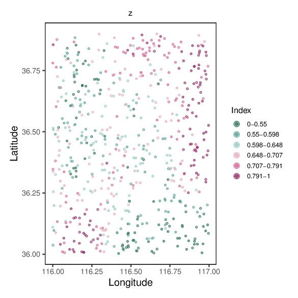
fig01 — the observed response y. High values concentrate in the north-east,
following the planted regime structure.Published reference · LISP
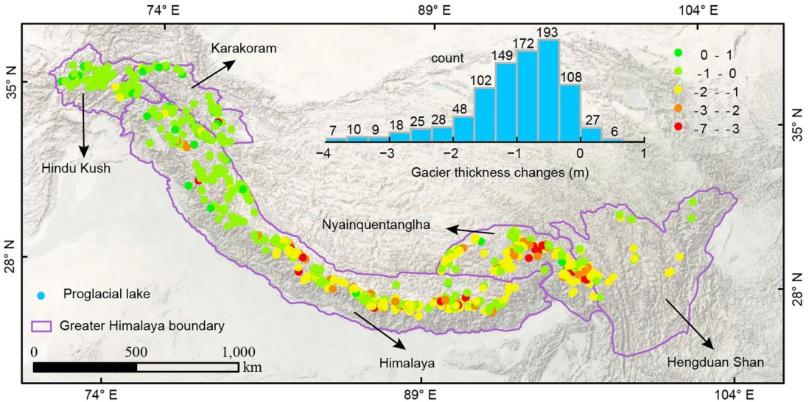
LISP paper Fig. 2 — the observed response of the glacier case: thickness
change of lake-terminating glaciers, Greater Himalayas, 2000–2020 (a directly observed
response, exactly as in this demo).Published reference · LPI
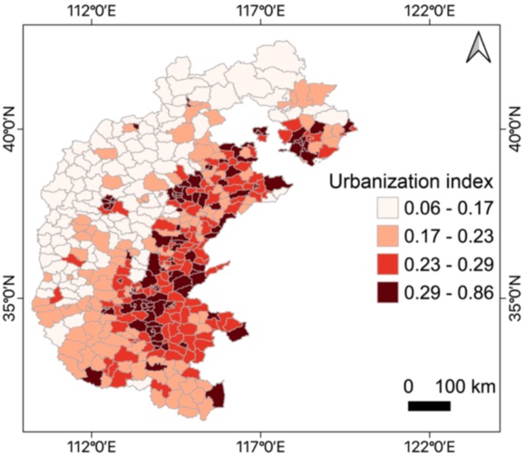
LPI paper Fig. 3 — the response variable of the urbanization case (a
county-level composite index). South-east high, north-west low.
Paper reference
Both published cases open with the response map as the macro pattern the paper sets out to
explain: Hu et al. (2024) Fig. 2 (PDF)
and Sun et al. (2026) Fig. 3 (PDF).
◆How to read this result
Pattern: the response map is the premise of everything downstream — a clearly
structured surface (demo: north-east high, mean 0.656, full 0–1 range used) is worth
local analysis; a salt-and-pepper map with no spatial organisation would not be.
Paper's reading: both published cases present the response map first, as the
macro spatial pattern the paper sets out to explain — glacier thinning concentrated
along the Himalayan arc (LISP Fig. 2), the SE-high / NW-low urbanization
gradient (LPI Fig. 3).
Deeper thinking: inspect the response distribution before modelling — heavy
skew or a few extreme units will dominate in-window variance and inflate local q
around them (consider a transform, and say so in the manuscript).
✓Checkpoint
results/step02-response.csv exists with 600 rows and the console reports
mean z = 0.6564, range 0–1, before you move on.
Step 2LPI upgrade
Geocomplexity (GC) pattern of every variable
What this step does
Compute the geocomplexity Gi ∈ [0,1] of each explanatory variable
(Zhang et al. 2023): high values mark units whose local spatial arrangement
contradicts spatial dependence. This step doubles the variable set from {X} to
{X, GC(X)} — the defining move of LPI. The LISP glacier case has no counterpart for
this stage: pattern augmentation entered the method family with geocomplexity and LPI, so
the published references here come from the LPI article only.
Code
R/03-geocomplexity.R
# =============================================================================
# 03-geocomplexity.R — geocomplexity (GC) pattern of every explanatory variable
#
# GC (Zhang et al. 2023, IJGIS) measures local spatial complexity: high values
# mark locations whose local pattern contradicts spatial dependence. LPI treats
# each variable's GC pattern as an additional explanatory variable, so this
# step doubles the variable set from {X} to {X, GC(X)}.
#
# Implementation: geocomplexity::geocd_vector(method = "spvar") with KNN
# spatial weights, k = max(knn_min, knn_share * n) (cc005 Step 2).
#
# Output: results/step03-geocomplexity.csv
# =============================================================================
source("R/functions/fn-config.R")
library(sf)
library(sdsfun)
library(geocomplexity)
cfg <- load_config()
ensure_dir("results")
d <- read_analysis_table(cfg)
x_vars <- cfg$predictors$x_vars
sf_data <- st_as_sf(d, coords = c(cfg$data$x_col, cfg$data$y_col),
crs = cfg$project$crs_input)
k_local <- max(cfg$params$gc$knn_min,
round(nrow(d) * cfg$params$gc$knn_share))
cat(sprintf("Local neighbourhood size k = %d (%.0f%% of n = %d)\n",
k_local, cfg$params$gc$knn_share * 100, nrow(d)))
wt <- sdsfun::spdep_contiguity_swm(sf_data, k = k_local)
cat("Computing geocomplexity for", length(x_vars), "variables...\n")
system.time({
gc_result <- geocd_vector(sf_data[, x_vars], wt,
method = cfg$params$gc$method,
normalize = TRUE)
})
gc_df <- as.data.frame(gc_result)
gc_df <- gc_df[, !grepl("^geometry$", names(gc_df)), drop = FALSE]
colnames(gc_df) <- gc_names_of(cfg)
out <- cbind(
d[, c(cfg$data$id_col, cfg$data$x_col, cfg$data$y_col)],
gc_df
)
write.csv(out, "results/step03-geocomplexity.csv", row.names = FALSE)
cat("Saved: results/step03-geocomplexity.csv\n")
Example output
Local neighbourhood size k = 30 (2% of n = 600)
Computing geocomplexity for 6 variables...
user system elapsed
0.782 0.008 0.833
Saved: results/step03-geocomplexity.csv
Demo run
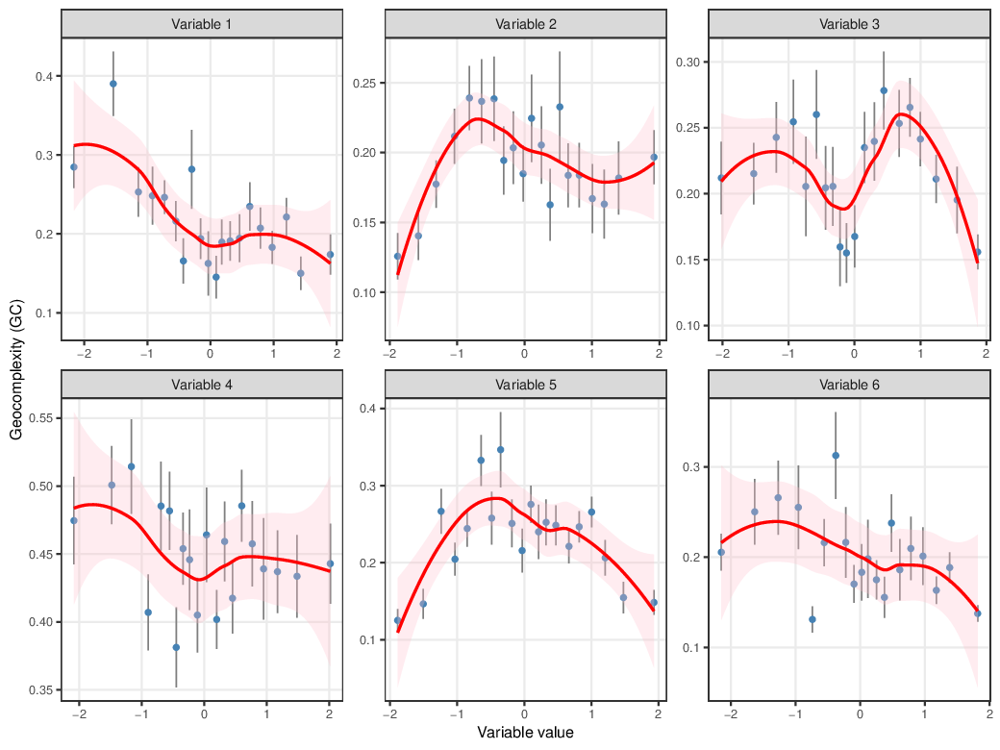
fig02 — variable value vs GC(X): 5%-quantile bin means with GAM smoother.
Nonlinear throughout; complexity is not a rescaling of the values.Published reference · LPI
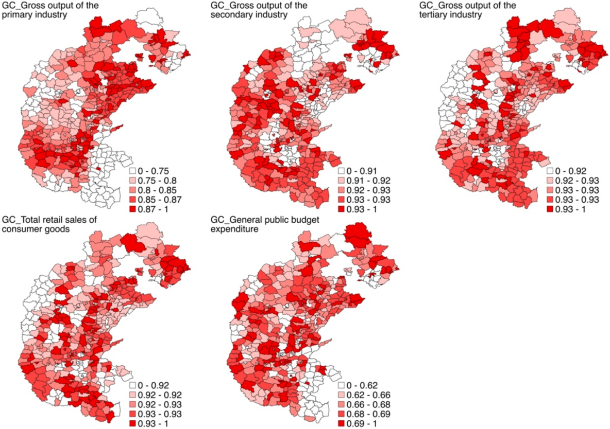
LPI paper Fig. 4 — county-level geocomplexity patterns of the five economic
variables: complexity concentrates along regime boundaries and around hub
cities.
Published reference · LPI
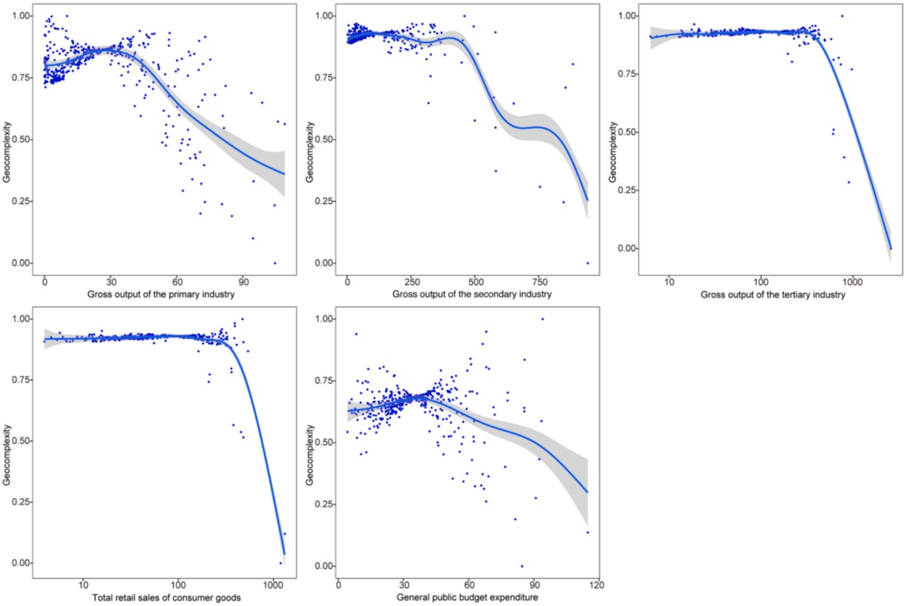
LPI paper Fig. 5 — the published counterpart of demo fig02: statistical trend
of each variable against its geocomplexity pattern (low value ↔ high complexity,
nonlinear).Published reference · GEOC
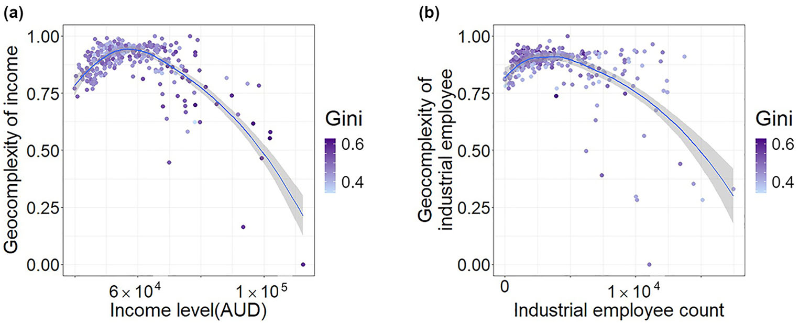
GEOC paper Fig. 5 (Zhang et al. 2023) — the origin of this diagnostic:
geocomplexity of income (a) and of industrial employees (b) against their values in
Australian SA3 regions, coloured by Gini coefficient. Complexity peaks at mid-range
values and falls at the extremes — the same nonlinear signature as demo
fig02.
Paper reference
Sun et al. (2026) Figs. 4–5
(PDF); the geocomplexity indicator and the
value-vs-complexity diagnostic (its Fig. 5, reproduced above) are defined in
Zhang et al. (2023) (PDF).
◆How to read this result
Pattern: GC(X) is highest where a variable's neighbourhood arrangement is
disordered, not where its value is high — the demo trend curves are non-monotonic,
confirming GC adds information that no transformation of the raw values could.
Paper's reading: the LPI article reads its Fig. 4–5 as evidence that
economic variables have "spatial structural effects" distinct from magnitude
effects, and the GEOC paper quantifies the stake: geocomplexity explained 17–47% of
the residuals that value-based models (OLS, SVR, GWR) left behind.
Deeper thinking: expect high GC along administrative or physical transition
zones that cut through your study area — if your GC maps instead mirror unit
density, revisit the KNN size (gc$knn_share), because irregular unit
sizes can masquerade as complexity. High-GC areas are also where any later model
error will concentrate, so they are the first places to inspect when validation
underperforms.
✓Checkpoint
results/step03-geocomplexity.csv holds six gc_* columns with
k = 30; the demo computes in under a second.
Step 3LISP core
Local analysis extent from the semivariogram
What this step does
Define "local" operationally: fit a semivariogram to the response on projected
coordinates, take its range a, and set the local window radius
d = 2a (the LISP rule). Every local computation downstream uses this
window.
Code
R/04-local-range.R
# =============================================================================
# 04-local-range.R — local analysis extent from the response semivariogram
#
# LISP (Hu et al. 2024) fixes the local window as d = multiplier x range,
# where range comes from a fitted semivariogram of the response on projected
# coordinates (automap::autofitVariogram). The multiplier (default 2) and the
# sensitivity of results to it are examined again in Step 10.
#
# Outputs: results/step04-local-range.csv (range, multiplier, threshold)
# results/step04-variogram-points.csv (empirical variogram, for Fig)
# =============================================================================
source("R/functions/fn-config.R")
source("R/functions/fn-lpi-core.R")
library(sf)
library(automap)
cfg <- load_config()
ensure_dir("results")
d <- read_analysis_table(cfg)
rz <- read_response(cfg)
d[[cfg$response$response_name]] <- rz[[cfg$response$response_name]]
spatial <- build_spatial(d, cfg)
lr <- estimate_local_range(d, cfg, spatial)
cat(sprintf("Variogram range = %.0f m (%.2f km)\n",
lr$range, lr$range / 1000))
cat(sprintf("Local extent (threshold) = %.0f m (%.2f km) [multiplier = %s]\n",
lr$threshold, lr$threshold / 1000,
cfg$params$lisp$threshold_multiplier))
dm <- spatial$distmat
cat(sprintf("Distance matrix (m): min=%.0f median=%.0f max=%.0f\n",
min(dm[dm > 0]), median(dm[dm > 0]), max(dm)))
write.csv(
data.frame(
variogram_model = as.character(lr$variogram$var_model$model[2]),
range_m = lr$range,
threshold_multiplier = cfg$params$lisp$threshold_multiplier,
threshold_m = lr$threshold,
n_obs = nrow(d)
),
"results/step04-local-range.csv", row.names = FALSE
)
# Empirical variogram points for the diagnostic figure (Step 11).
vg <- lr$variogram$exp_var
write.csv(
data.frame(dist_m = vg$dist, gamma = vg$gamma, np = vg$np),
"results/step04-variogram-points.csv", row.names = FALSE
)
cat("Saved: results/step04-local-range.csv, results/step04-variogram-points.csv\n")
Example output
Variogram range = 22407 m (22.41 km)
Local extent (threshold) = 44814 m (44.81 km) [multiplier = 2]
Distance matrix (m): min=112 median=49453 max=127357
Saved: results/step04-local-range.csv, results/step04-variogram-points.csv
Published reference · LISP
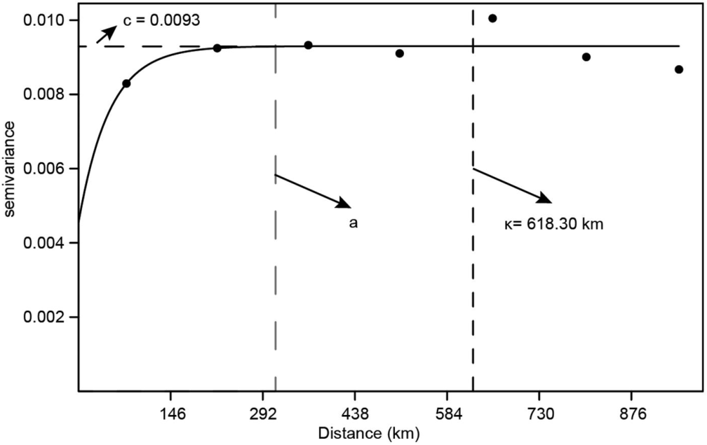
LISP paper Fig. 4 — the original definition of this step: semivariogram of
glacier thickness change, range a = 309.15 km → local extent d = 618.30 km.Published reference · LPI
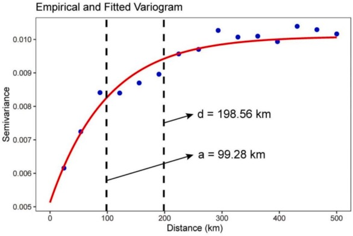
LPI paper Fig. 6 — the same rule in the urbanization case: range
a = 99.28 km → local extent d = 198.56 km. The demo counterpart appears in fig08
(Step 7), where range = 22.4 km → extent = 44.8 km.
Paper reference
The d = 2a rule comes from Hu et al. (2024)
(PDF) and is applied unchanged in
Sun et al. (2026) (PDF).
◆How to read this result
Pattern: the range is where the fitted curve levels off — beyond it, response
values are no longer spatially correlated; the demo's 22.4 km range reflects
the wavelength of the planted regimes.
Paper's reading: the LPI article treats d = 2a as the neighbourhood
within which stratified power is meaningfully "local" — big enough for stable
in-window discretisation, small enough to preserve locality.
Deeper thinking: two failure modes to check before trusting the extent:
(i) a variogram that keeps climbing (trend, no sill) makes the fitted range
unstable — detrend or interpret cautiously; (ii) a projected CRS in degrees
silently breaks everything — the range must be in metres. Report the median number
of neighbours inside the window; if it falls below ~30, discretisation inside
windows becomes fragile (see Step 9 for the multiplier sensitivity).
✓Checkpoint
results/step04-local-range.csv reports range = 22407 m and
threshold = 44814 m with multiplier 2 on the demo data.
Step 4LISP core
Local stratified power (LISP factor detector)
What this step does
Compute, at every unit, the local q-statistic of every variable and every GC
pattern inside the local window — the core "where does each factor matter" result.
Code
R/05-lisp-factor-detector.R
# =============================================================================
# 05-lisp-factor-detector.R — LISP local q for every variable in {X, GC(X)}
#
# localsp::lisp() runs the geographical detector factor detector inside each
# location's local window (radius = threshold from Step 04), yielding a local
# q value and significance per variable per location (cc005 Step 3).
# NA imputation: q -> 0 (no explanatory power), p -> 1 (not significant).
#
# Outputs: results/step05-local-q-values.csv
# results/step05-local-q-sig.csv
# =============================================================================
source("R/functions/fn-config.R")
source("R/functions/fn-lpi-core.R")
library(sf)
library(localsp)
library(gdverse)
library(sdsfun)
library(dplyr)
cfg <- load_config()
ensure_dir("results")
d <- build_model_frame(cfg)
all_vars <- all_vars_of(cfg)
n_cores <- get_cores(cfg)
spatial <- build_spatial(d, cfg)
threshold <- read_local_range(cfg)$threshold_m
cat(sprintf("LISP factor detector: %d variables (%d X + %d GC), %d obs, %d cores\n",
length(all_vars), length(cfg$predictors$x_vars),
length(gc_names_of(cfg)), nrow(d), n_cores))
cat(sprintf("Threshold = %.0f m\n", threshold))
system.time({
lisp_out <- run_lisp_factor(
d, cfg,
vars = all_vars,
threshold = threshold,
distmat = spatial$distmat,
cores = n_cores
)
})
write.csv(lisp_out$q, "results/step05-local-q-values.csv", row.names = FALSE)
write.csv(lisp_out$sig, "results/step05-local-q-sig.csv", row.names = FALSE)
cat("Saved: results/step05-local-q-values.csv, results/step05-local-q-sig.csv\n")
# Quick console summary: top variables by mean local q.
mean_q <- sort(colMeans(lisp_out$q[, all_vars], na.rm = TRUE),
decreasing = TRUE)
cat("\nTop variables by mean local q:\n")
for (v in names(head(mean_q, 10))) {
cat(sprintf(" %-24s %.4f\n", v, mean_q[v]))
}
Example output
LISP factor detector: 12 variables (6 X + 6 GC), 600 obs, 13 cores
Threshold = 44814 m
user system elapsed
0.125 0.067 7.183
Saved: results/step05-local-q-values.csv, results/step05-local-q-sig.csv
Top variables by mean local q:
x1 0.2986 gc_x1 0.1195
x2 0.1777 x5 0.1096
x3 0.1457 gc_x6 0.0775
x6 0.1319 gc_x2 0.0706
Demo run
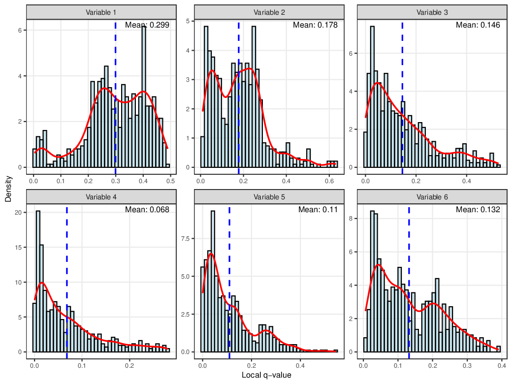
fig03a — distribution of local q per variable. Wide spreads (x1: mean 0.299,
max 0.490) are the signature of heterogeneous explanatory power.Demo run
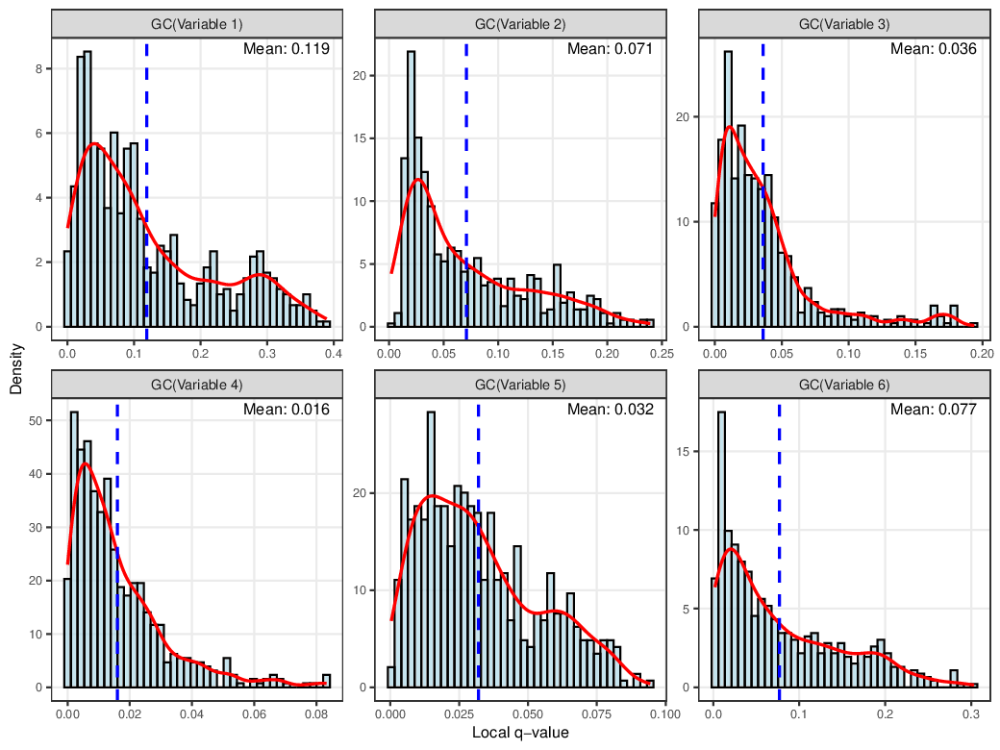
fig03b — distribution of local q per GC pattern. Lower means (GC(x1): 0.120)
with long right tails: pattern effects are localized, not universal.
Demo run
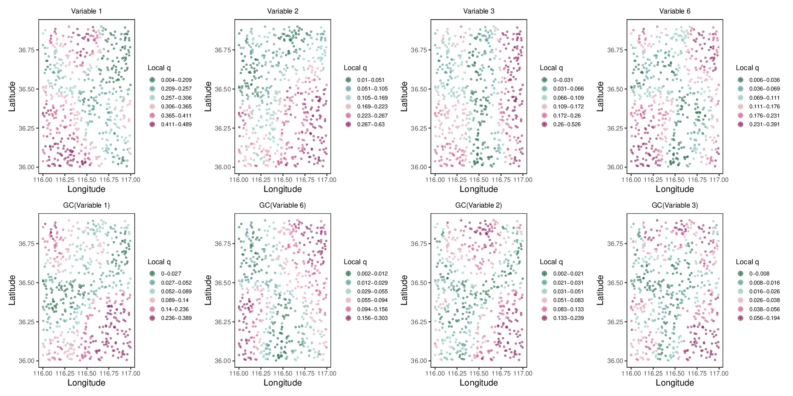
fig04 — local q maps, top-4 variables (top row) and top-4 GC patterns
(bottom row). x1 dominates the west/north, x2 the east — the planted two-regime
structure, recovered.Published reference · LISPLISP paper Fig. 5 — local PD of individual variables and their significance
for glacier thickness change: slope has the largest share of significant
area.
Published reference · LPI
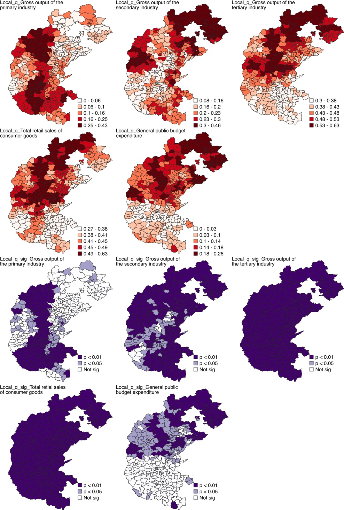
LPI paper Fig. 7 — local PD maps + significance for the five economic
variables. Tertiary industry and retail sales: highest PD, significant in 100% of
counties.Published reference · LPI
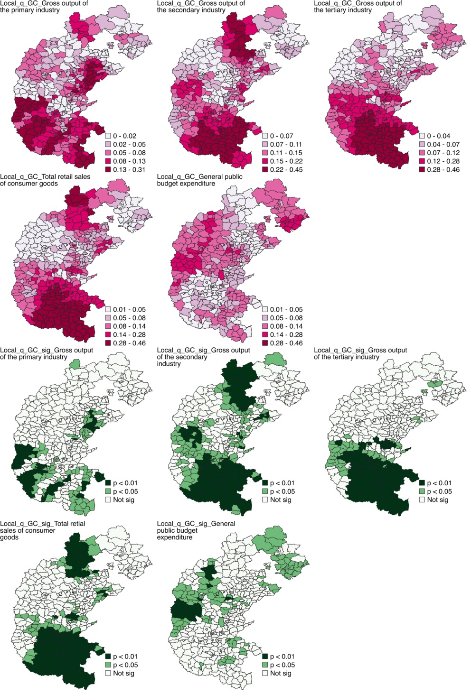
LPI paper Fig. 8 — local PD of the geocomplexity patterns: modest on average
but with sharply localized significant pockets.
Paper reference
Hu et al. (2024) Fig. 5 (PDF);
Sun et al. (2026) Figs. 7–8
(PDF).
◆How to read this result
Pattern: read magnitude and significance share together — a variable with
modest mean q but near-100% significance is a universal weak driver; one
with the same mean but patchy significance is a localized strong driver. In
the demo, x1 is both strong and near-universal (mean 0.299, significant at 94.5% of
units), while GC(x1) matters only in pockets (mean 0.120, significant at
79.8%).
Paper's reading: the LISP glacier case reads its Fig. 5 by exactly this
rule — slope is the near-universal driver (significant at 99.34% of locations)
while temperature and precipitation matter only in subregions; the LPI article's
headline from its Fig. 7–8: tertiary industry (mean PD 0.454) and retail
(0.434) dominate everywhere, while GC variables are "concentrated in specific local
regions" — discoveries a global model cannot make (see the comparison tables in
Step 7).
Deeper thinking: look for complementary regimes — where one driver's
q falls as another's rises (demo: the x1/x2 west–east handover). Those handover
lines are the spatial boundaries your Discussion section should explain
mechanistically. Also map the imputed q=0 units (windows with insufficient
variation): if they cluster, that subregion's data support is too thin for local
claims there.
✓Checkpoint
results/step05-local-q-values.csv and -sig.csv exist; the
mean-q ranking is led by x1 = 0.2986 on the demo data.
Step 5LPI upgrade
Local pattern interactions
What this step does
For every unit, discretise each pair of top variables inside the local window, compute
single and combined-zone q, and classify the interaction into the five
geographical-detector types. Pairs span three categories: X×X, X×GC, GC×GC.
Code
R/06-local-interactions.R
# =============================================================================
# 06-local-interactions.R — local pairwise pattern interactions
#
# Pairs are formed among the top-N variables by mean local q (N from config;
# N=5 gives 10 pairs). For every location, each pair member is discretized
# inside the local window, single and combined-zone q values are computed
# (gdverse::gd), and the interaction is typed into the 5 geographical
# detector classes (cc005 Step 3e / LPI Fig 9).
#
# Outputs: results/step06-all-pairwise-interactions.csv
# results/step06-local-best-interaction.csv
# =============================================================================
source("R/functions/fn-config.R")
source("R/functions/fn-lpi-core.R")
library(sf)
library(gdverse)
library(sdsfun)
library(dplyr)
cfg <- load_config()
ensure_dir("results")
d <- build_model_frame(cfg)
all_vars <- all_vars_of(cfg)
spatial <- build_spatial(d, cfg)
threshold <- read_local_range(cfg)$threshold_m
local_q <- read.csv("results/step05-local-q-values.csv")
# --- Top-N variables by mean local q ----------------------------------------
top_n <- cfg$params$interaction$top_n_vars
mean_q <- sort(colMeans(local_q[, all_vars], na.rm = TRUE), decreasing = TRUE)
top_vars <- names(mean_q)[1:top_n]
cat(sprintf("Top %d variables by mean local q:\n", top_n))
for (v in top_vars) cat(sprintf(" %-24s %.4f\n", v, mean_q[v]))
var_pairs <- combn(top_vars, 2, simplify = FALSE)
cat(sprintf("\nRunning local interaction for %d pairs x %d locations...\n",
length(var_pairs), nrow(d)))
system.time({
inter_all <- run_interactions_all(d, cfg, var_pairs,
spatial$distmat, threshold)
})
# --- Best interaction per location -------------------------------------------
coord_lookup <- data.frame(
LocationID = seq_len(nrow(d)),
Longitude = d[[cfg$data$x_col]],
Latitude = d[[cfg$data$y_col]]
)
inter_best <- inter_all %>%
group_by(LocationID) %>%
slice_max(qv12, n = 1, with_ties = FALSE) %>%
ungroup() %>%
left_join(coord_lookup, by = "LocationID") %>%
select(LocationID, Longitude, Latitude,
var1, var2, qv1, qv2, qv12, interaction)
write.csv(inter_all, "results/step06-all-pairwise-interactions.csv",
row.names = FALSE)
write.csv(inter_best, "results/step06-local-best-interaction.csv",
row.names = FALSE)
cat("Saved: step06-all-pairwise-interactions.csv, step06-local-best-interaction.csv\n")
# Console summary: strongest pairs by mean qv12.
pair_summary <- inter_all %>%
group_by(var1, var2) %>%
summarise(mean_qv12 = mean(qv12, na.rm = TRUE), .groups = "drop") %>%
arrange(desc(mean_qv12))
cat("\nPairs by mean interaction q (qv12):\n")
print(as.data.frame(head(pair_summary, 10)))
fig05 — pairs ranked by mean interaction q (± SD), coloured by category.
Every pair beats the best single factor (0.299).Demo run
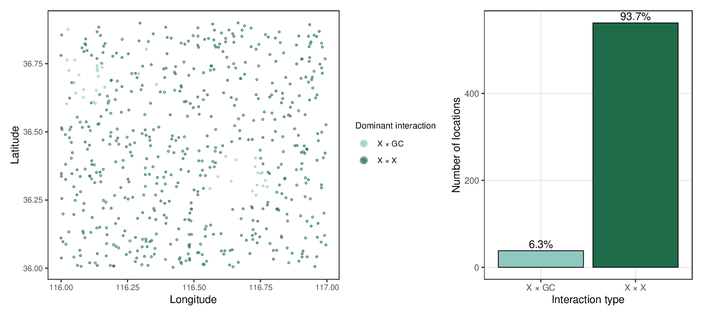
fig06 — dominant interaction category per unit and category frequencies:
spatially organised, with X×GC dominating transition zones.
Published reference · LISP
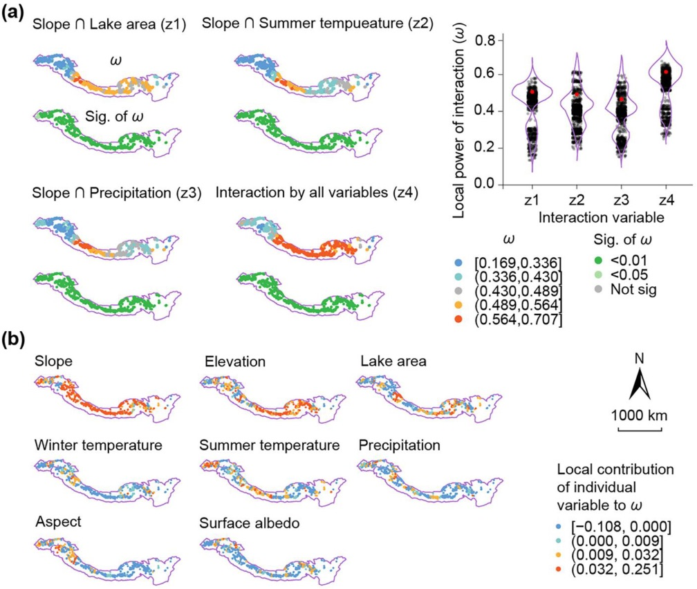
LISP paper Fig. 6 — local PD of interaction determinants in the glacier
case: pairwise interactions (slope ∩ lake area, slope ∩ summer temperature,
slope ∩ precipitation) and the all-variable interaction, with per-variable
contributions.Published reference · LPI
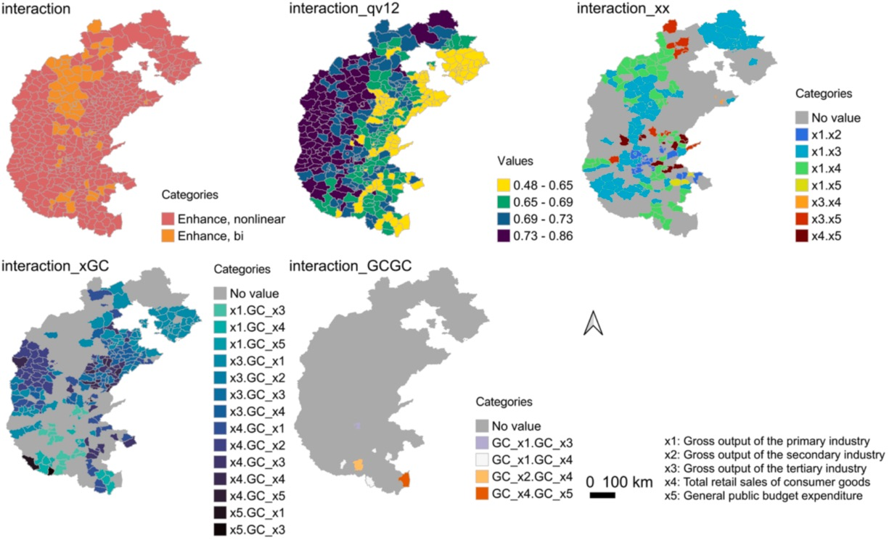
LPI paper Fig. 9 — local PD of pattern interactions: interaction strength
48–86%, dominated by nonlinear-enhance and bivariate-enhance types; category shares
variable×variable 41.7%, variable×GC 56.7%, GC×GC rare.
Paper reference
Hu et al. (2024) Fig. 6 (PDF);
Sun et al. (2026) Fig. 9 (PDF). The
five-class interaction typing follows the geographical detector of Wang et al.
(2010).
◆How to read this result
Pattern: the informative comparison is not
qv12 > max(qv1,qv2) (true for all "enhance" types by construction) but
qv12 vs qv1+qv2 — pairs exceeding the sum are nonlinear enhancements, i.e.
genuinely synergistic. The demo's top pair x2 × x6 (0.524) far exceeds
the sum of its singles (0.178 + 0.132) — the planted interaction pulls x6
into the top five, though the direct x5×x6 pair itself is only tested if you raise
top_n_vars (x5 ranks sixth) — a deliberate scope decision to revisit
per application.
Paper's reading: the LPI article's flagship numbers are interaction gains:
retail × GC(tertiary) reaches local PD 0.610 against 0.537 globally, and
variable×GC pairs supply the majority (56.7%) of best-per-county interactions — the
paper's core claim that patterns amplify variables.
Deeper thinking: a dominant X×GC pair reads mechanistically as "the effect
of X is amplified where another variable's spatial arrangement is complex" — a
hypothesis generator, not a conclusion; nominate a process (spillover, boundary
friction, infrastructure mismatch) and test it in the Discussion. Map where the
dominant category switches: switch lines that align with the Step 4
regime handover corroborate real structure; scattered confetti suggests window
sample sizes are too small (check min_local_n).
✓Checkpoint
results/step06-all-pairwise-interactions.csv and
step06-local-best-interaction.csv exist; the pair ranking is led by
x2 × x6 = 0.5242 on the demo data.
Step 6
GOZH total effect (joint explanatory ceiling)
What this step does
Measure how much all variables and patterns jointly explain — globally, and inside
each unit's k-nearest neighbourhood — using GOZH: an rpart regression tree zones the data,
then the combined-zone q is computed (Luo et al. 2022; no CC-licensed
figure available for embedding).
Code
R/07-gozh-total-effect.R
# =============================================================================
# 07-gozh-total-effect.R — GOZH total effect of all variables together
#
# GOZH (Luo et al. 2022) zones the study area with a regression tree over all
# predictors, then measures the combined q of the leaf zones. Run globally
# (one q for the whole area) and locally (q inside each location's k-nearest
# neighbourhood), as in cc005 Step 4.
#
# Outputs: results/step07-gozh-global.csv
# results/step07-local-gozh.csv
# =============================================================================
source("R/functions/fn-config.R")
source("R/functions/fn-lpi-core.R")
library(sf)
library(rpart)
library(gdverse)
library(FNN)
cfg <- load_config()
ensure_dir("results")
d <- build_model_frame(cfg)
all_vars <- all_vars_of(cfg)
resp <- cfg$response$response_name
spatial <- build_spatial(d, cfg)
k_local <- max(cfg$params$gc$knn_min,
round(nrow(d) * cfg$params$gc$knn_share))
# --- Global GOZH --------------------------------------------------------------
cat("Running global GOZH on the full dataset...\n")
gozh_global <- run_gozh(d, resp, all_vars)
cat(sprintf("Global GOZH q = %.4f p = %.4g\n",
gozh_global["q"], gozh_global["p"]))
write.csv(
data.frame(model = "GOZH_global",
q_value = gozh_global["q"], p_value = gozh_global["p"]),
"results/step07-gozh-global.csv", row.names = FALSE
)
# --- Local GOZH ----------------------------------------------------------------
cat(sprintf("Running local GOZH for %d locations (k = %d)...\n",
nrow(d), k_local))
local_gozh <- run_local_gozh(d, cfg, all_vars, spatial$coords_mat, k_local)
out <- cbind(
d[, c(cfg$data$id_col, cfg$data$x_col, cfg$data$y_col)],
local_gozh
)
write.csv(out, "results/step07-local-gozh.csv", row.names = FALSE)
cat("Saved: results/step07-gozh-global.csv, results/step07-local-gozh.csv\n")
cat(sprintf("Local GOZH q: mean=%.4f min=%.4f max=%.4f (%%p<0.05: %.1f)\n",
mean(local_gozh$local_gozh, na.rm = TRUE),
min(local_gozh$local_gozh, na.rm = TRUE),
max(local_gozh$local_gozh, na.rm = TRUE),
mean(local_gozh$local_gozh_p < 0.05, na.rm = TRUE) * 100))
Example output
Global GOZH q = 0.6908 p = 5.819e-10
Running local GOZH for 600 locations (k = 30)...
Local GOZH q: mean=0.5173 min=0.1686 max=0.8695 (%p<0.05: 77.2)
Saved: results/step07-gozh-global.csv, results/step07-local-gozh.csv
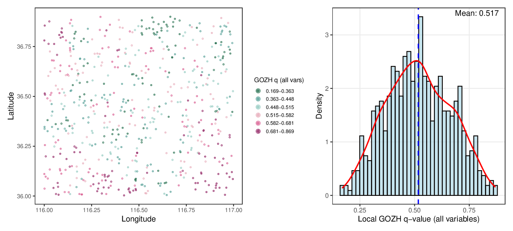
Demo run fig07 — local GOZH map and
distribution: the joint ceiling averages 0.517 locally (range 0.169–0.870) against 0.691
globally.
Paper reference
GOZH is defined in Luo et al. (2022)
(PDF); the urbanization article uses this machinery
inside its interaction step.
◆How to read this result
Pattern: local GOZH is the ceiling of joint explanation at each
place. The gap between it and the best single/pair local q measures unexploited
joint structure; where local GOZH itself is low (demo minimum 0.169), the drivers
of that subregion are outside the variable set — or the response there is
noise-dominated.
Paper's reading: in the LPI lineage, GOZH supplies the tree-based zoning
that makes many-variable interactions reliable (avoiding the fragmented-overlay
problem of classic detectors); the urbanization article uses exactly this machinery
inside its interaction step.
Deeper thinking: global GOZH (0.691) exceeding the local mean (0.517) is not
a contradiction — explainable variance is scale-dependent: the global tree exploits
between-regime contrasts that vanish inside local windows. Use the low-GOZH map as
a data-collection targeting tool: those are the places where adding a
covariate would pay most.
✓Checkpoint
results/step07-gozh-global.csv reports global
q = 0.6908; step07-local-gozh.csv gives local mean 0.5173 on the
demo data.
3.3 Results, Validation & Interpretation
Three validation layers close the pipeline: the global OPGD-style benchmark that becomes the
paper's main table (Step 7), subsample stability (Step 8), and parameter sensitivity
(Step 9). Step 10 then regenerates all eight figures from results/
alone.
Step 7
Global benchmark and the paper's main table
What this step does
Benchmark every local result against the global OPGD-style q, producing the
validation table that becomes the main table of an LPI application paper (the published
article's Table 4).
Published counterpart 2 — LPI paper Table 4 (Sun et al. 2026, urbanization case; excerpt)
Variable / interaction
LPI mean [min, max]
% p<0.05
OPGD global q
x3 tertiary industry
0.454 [0.298, 0.627]
100.0
0.483 **
x4 retail sales
0.434 [0.275, 0.628]
100.0
0.438 **
x1 primary industry
0.152 [0.005, 0.431]
56.0
0.113 **
GC(x3)
0.146 [0.066, 0.458]
27.7
0.016 (p=0.134, n.s.)
GC(x4)
0.159 [0.008, 0.464]
17.2
0.040 **
x1 ∩ x3
0.641 [0.444, 0.821]
100.0
0.639 **
x4 ∩ GC(x3)
0.610 [0.336, 0.783]
100.0
0.537 **
Excerpt from Sun et al. (2026), Table 4
(PDF). x1–x5: gross output of
primary/secondary/tertiary industry, total retail sales, public budget expenditure.
** = significant at p < 0.01.
Demo run
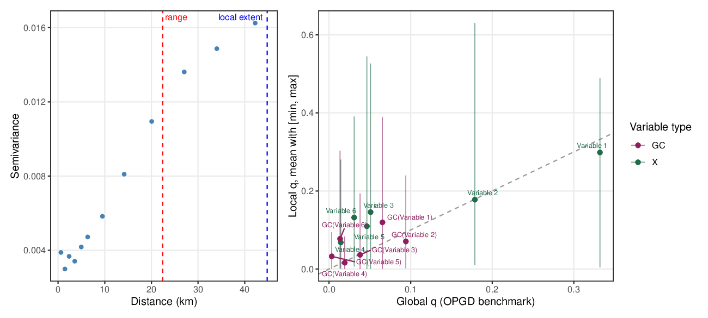
fig08 — (left) demo variogram with range (22.4 km) and extent (44.8 km)
marks; (right) local mean [min–max] vs global q on the 1:1 line: local maxima exceed the
global value for every variable.Published reference · LPI
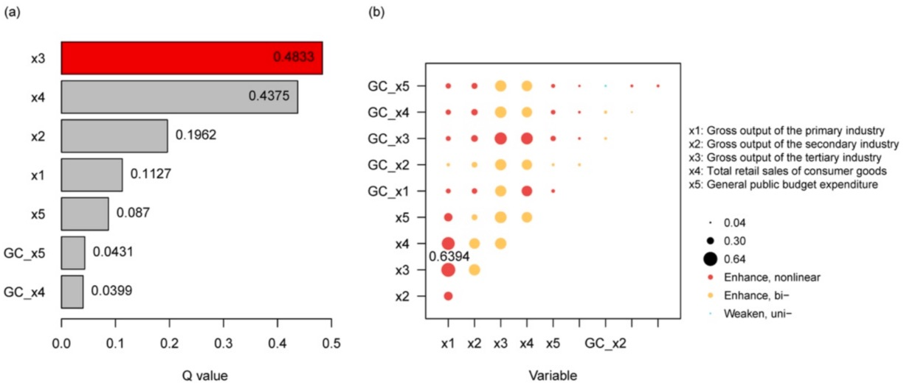
LPI paper Fig. 10 — the OPGD global benchmark: (a) individual variables,
(b) interactions. The comparison target for all local results.
Paper reference
The benchmark follows OPGD (Song et al. 2020,
PDF); the published tables come from
Hu et al. (2024) and Sun et al. (2026).
◆How to read this result
Pattern: classify each row into three regimes: (i) local mean ≈ global with
a narrow range → homogeneous driver, local analysis adds little; (ii) local
mean ≈ global with a wide range → the global number actively misleads (demo
x2: global 0.179 hides a 0.010–0.630 spread); (iii) globally non-significant but
locally significant in pockets → a discovery only local analysis can make. The demo
produces regime (iii) twice: x6 (global q=0.031, p=0.085, n.s. — yet locally
significant at 89.8% of units) and the interaction x6 × GC(x1) (global
0.188, p=0.919, n.s. — local mean 0.315).
Paper's reading: both published tables lean on the same regimes. LISP's
flagship is elevation: local mean 0.181 against a global PD of only 0.062 — "the
LISP model effectively avoids underestimation … that can occur with global
geographical detector models". LPI's strongest case is regime (iii): GC(x3) is
globally n.s. (q=0.016, p=0.134) yet locally reaches PD 0.458 and is significant in
27.7% of counties; interactions tell the same story (0.610 local vs 0.537 global
for x4∩GC(x3)).
Deeper thinking: use this three-regime classification as the skeleton of
your Results narrative — it converts a table of numbers into three claims with
different practical consequences (stable policy lever / spatially targeted lever /
hidden local lever). And note the demo's global q slightly exceeding the local mean
for the top variable (x1: 0.332 vs 0.299): global strata exploit between-regime
contrast, so "local < global on average, local > global at maxima" is the
expected signature of stratified heterogeneity, not an error.
✓Checkpoint
results/step08-validation-table.csv matches the demo table above; the two
regime-(iii) discovery rows (x6; x6 × GC(x1)) are present.
Step 8
Subsample stability (holdout)
What this step does
Drop 5% of units at random, recompute local and global q for the top-10 variables, repeat
20 times: do the conclusions survive data perturbation?
Code
R/09-validation-holdout.R
# =============================================================================
# 09-validation-holdout.R — subsample stability of local and global q
#
# Robustness protocol from the cc005 R1 revision: randomly drop a share of
# units (default 5%), recompute local q (LISP) and global q for the top-N
# variables, repeat n_repeats times. Reports per-variable mean local q with
# 95% CI, the median change rate against the full-data run, and Spearman
# rank preservation of the variable-importance ordering.
#
# Outputs: results/step09-holdout-local-q.csv
# results/step09-holdout-global-q.csv
# results/step09-holdout-summary.csv
# =============================================================================
source("R/functions/fn-config.R")
source("R/functions/fn-lpi-core.R")
library(sf)
library(localsp)
library(gdverse)
library(sdsfun)
library(dplyr)
cfg <- load_config()
ensure_dir("results")
hold <- cfg$validation$holdout
set.seed(hold$seed)
d <- build_model_frame(cfg)
all_vars <- all_vars_of(cfg)
resp <- cfg$response$response_name
n_cores <- get_cores(cfg)
# Top-N variables by full-data mean local q.
local_q_full <- read.csv("results/step05-local-q-values.csv")
mean_q_full <- sort(colMeans(local_q_full[, all_vars], na.rm = TRUE),
decreasing = TRUE)
top_vars <- names(mean_q_full)[1:hold$top_n_vars]
cat(sprintf("Holdout validation: %d repeats, drop %.0f%%, top %d variables\n",
hold$n_repeats, hold$drop_share * 100, hold$top_n_vars))
rep_local <- list()
rep_global <- list()
for (r in seq_len(hold$n_repeats)) {
cat(sprintf("Repeat %d / %d\n", r, hold$n_repeats))
keep_idx <- sort(sample(seq_len(nrow(d)),
size = round(nrow(d) * (1 - hold$drop_share))))
d_sub <- d[keep_idx, ]
# Rebuild spatial scaffolding and local extent on the subsample.
spatial_sub <- build_spatial(d_sub, cfg)
lr_sub <- estimate_local_range(d_sub, cfg, spatial_sub)
lisp_sub <- run_lisp_factor(
d_sub, cfg, vars = top_vars,
threshold = lr_sub$threshold,
distmat = spatial_sub$distmat,
cores = n_cores
)
rep_local[[r]] <- data.frame(
repeat_id = r,
Variable = top_vars,
mean_local_q = sapply(top_vars, function(v) {
mean(lisp_sub$q[[v]], na.rm = TRUE)
})
)
rep_global[[r]] <- data.frame(
repeat_id = r,
Variable = top_vars,
global_q = sapply(top_vars, function(v) {
run_global_gd(d_sub, resp, v,
n_strata = cfg$params$global$n_strata)["q"]
})
)
}
local_df <- do.call(rbind, rep_local)
global_df <- do.call(rbind, rep_global)
write.csv(local_df, "results/step09-holdout-local-q.csv", row.names = FALSE)
write.csv(global_df, "results/step09-holdout-global-q.csv", row.names = FALSE)
# --- Summary: CI, change rate, rank preservation -------------------------------
full_ref <- data.frame(Variable = top_vars,
full_mean_q = as.numeric(mean_q_full[top_vars]))
summary_df <- local_df %>%
group_by(Variable) %>%
summarise(
sub_mean_q = mean(mean_local_q),
ci_lower = quantile(mean_local_q, 0.025),
ci_upper = quantile(mean_local_q, 0.975),
.groups = "drop"
) %>%
left_join(full_ref, by = "Variable") %>%
mutate(change_pct = round((sub_mean_q - full_mean_q) / full_mean_q * 100, 2))
# Spearman rank correlation of variable importance, per repeat.
rank_cor <- local_df %>%
left_join(full_ref, by = "Variable") %>%
group_by(repeat_id) %>%
summarise(spearman = cor(mean_local_q, full_mean_q, method = "spearman"),
.groups = "drop")
summary_df$spearman_median <- median(rank_cor$spearman)
summary_df$spearman_min <- min(rank_cor$spearman)
write.csv(summary_df, "results/step09-holdout-summary.csv", row.names = FALSE)
cat("Saved: step09-holdout-local-q / step09-holdout-global-q / step09-holdout-summary\n")
print(as.data.frame(summary_df))
cat(sprintf("\nSpearman rank preservation: median = %.3f, min = %.3f\n",
median(rank_cor$spearman), min(rank_cor$spearman)))
Example output
Variable
Full-data mean q
Subsample mean
95% CI
Change %
x1
0.2986
0.2997
[0.294, 0.307]
+0.4
x2
0.1777
0.1758
[0.164, 0.188]
−1.1
GC(x1)
0.1195
0.1177
[0.111, 0.124]
−1.5
x5
0.1096
0.1020
[0.082, 0.111]
−6.9
Spearman rank preservation of variable importance across 20 repeats:
median ρ = 0.988, minimum 0.927.
◆How to read this result
Pattern: rank preservation matters more than absolute stability — the
manuscript's narrative rests on the ordering of drivers, and a median
Spearman of 0.988 says that ordering is robust; individual mean-q changes under
±10% are unremarkable.
Paper's reading: this protocol is the standard reviewer-requested robustness
check in this method family — the published applications report parameter and
stability checks as part of their validation; report the CI and the change rate,
not just a reassuring sentence.
Deeper thinking: whenever the minimum Spearman dips visibly below the median
(0.927 vs 0.988 here), find the repeat responsible — it is usually one where the
dropped 5% removed a dense cluster, which tells you which subregion your
conclusions depend on. That is more informative than the median: consider
reporting it as a named limitation ("conclusions in subregion S rest on the densest
cluster of observations").
✓Checkpoint
results/step09-holdout-summary.csv reports median
Spearman = 0.988, minimum = 0.927 on the demo data
(seed 2026).
Step 9
Parameter sensitivity
What this step does
Vary the two free parameters — window multiplier (1.5 / 2 / 3 × range) and in-window bins
(3 / 4 / 5) — and confirm that the variable ordering, not the exact q level, is what the
analysis depends on.
Code
R/10-sensitivity-params.R
# =============================================================================
# 10-sensitivity-params.R — sensitivity of local q to the two key parameters
#
# Protocol from the cc005 R1 revision, on the top-N variables:
# Experiment 1 — vary the local extent multiplier (default grid 1.5 / 2 / 3),
# discretization bins fixed at the config value
# Experiment 2 — vary the discretization bin count (default grid 3 / 4 / 5),
# local extent fixed at the config multiplier
#
# Outputs: results/step10-sensitivity-threshold.csv
# results/step10-sensitivity-discnum.csv
# =============================================================================
source("R/functions/fn-config.R")
source("R/functions/fn-lpi-core.R")
library(sf)
library(localsp)
library(gdverse)
library(sdsfun)
library(dplyr)
cfg <- load_config()
ensure_dir("results")
sens <- cfg$validation$sensitivity
d <- build_model_frame(cfg)
all_vars <- all_vars_of(cfg)
n_cores <- get_cores(cfg)
spatial <- build_spatial(d, cfg)
vg_range <- read_local_range(cfg)$range_m
local_q_full <- read.csv("results/step05-local-q-values.csv")
mean_q_full <- sort(colMeans(local_q_full[, all_vars], na.rm = TRUE),
decreasing = TRUE)
top_vars <- names(mean_q_full)[1:sens$top_n_vars]
cat(sprintf("Sensitivity analysis on top %d variables: %s\n",
sens$top_n_vars, paste(top_vars, collapse = ", ")))
# --- Experiment 1: local extent multiplier -------------------------------------
cat("\nExperiment 1 — threshold multiplier grid:",
paste(sens$threshold_multipliers, collapse = " / "), "\n")
exp1 <- do.call(rbind, lapply(sens$threshold_multipliers, function(m) {
cat(sprintf(" multiplier = %.1f (threshold = %.0f m)\n", m, vg_range * m))
lisp_out <- run_lisp_factor(
d, cfg, vars = top_vars,
threshold = vg_range * m,
distmat = spatial$distmat,
cores = n_cores
)
data.frame(
threshold_multiplier = m,
threshold_m = vg_range * m,
Variable = top_vars,
mean_local_q = sapply(top_vars, function(v) {
mean(lisp_out$q[[v]], na.rm = TRUE)
})
)
}))
write.csv(exp1, "results/step10-sensitivity-threshold.csv", row.names = FALSE)
# --- Experiment 2: discretization bins ------------------------------------------
cat("\nExperiment 2 — discnum grid:",
paste(sens$discnums, collapse = " / "), "\n")
threshold_fixed <- vg_range * cfg$params$lisp$threshold_multiplier
exp2 <- do.call(rbind, lapply(sens$discnums, function(k) {
cat(sprintf(" discnum = %d\n", k))
lisp_out <- run_lisp_factor(
d, cfg, vars = top_vars,
threshold = threshold_fixed,
distmat = spatial$distmat,
discnum = k,
cores = n_cores
)
data.frame(
discnum = k,
Variable = top_vars,
mean_local_q = sapply(top_vars, function(v) {
mean(lisp_out$q[[v]], na.rm = TRUE)
})
)
}))
write.csv(exp2, "results/step10-sensitivity-discnum.csv", row.names = FALSE)
cat("\nSaved: step10-sensitivity-threshold.csv, step10-sensitivity-discnum.csv\n")
cat("\nMean local q by threshold multiplier:\n")
print(reshape2::dcast(exp1, Variable ~ threshold_multiplier,
value.var = "mean_local_q"))
cat("\nMean local q by discnum:\n")
print(reshape2::dcast(exp2, Variable ~ discnum, value.var = "mean_local_q"))
Example output
Mean local q
multiplier 1.5
2 (default)
3
discnum 3
4 (default)
5
x1
0.271
0.299
0.304
0.279
0.299
0.314
x2
0.223
0.178
0.168
0.145
0.178
0.196
x3
0.210
0.146
0.053
0.124
0.146
0.160
x6
0.176
0.132
0.057
0.099
0.132
0.154
GC(x1)
0.135
0.119
0.078
0.099
0.119
0.134
Mean local q of the top-5 variables across the multiplier grid (left) and the
discretisation grid (right).
◆How to read this result
Pattern: two systematic drifts are expected, not alarming: more bins
→ mechanically higher q (finer strata always explain more variance), and a larger
window → q drifts toward the global value as more heterogeneity is mixed in. The
check is whether the ordering of top variables survives — here x1 leads
under every setting.
Paper's reading: the LPI article reports parameter sensitivity as part of
its validation trio (statistical accuracy, spatial consistency, robustness); the
convention is to show the drift openly and argue ordering stability.
Deeper thinking: the interesting cells are the collapses as the window
triples — x3 falls from 0.210 to 0.053, x6 from 0.176 to 0.057, GC(x1) from 0.135
to 0.078 — while the broad regime driver x1 grows (0.271 → 0.304). Which
variables are scale-bound tells you the operative scale of each driver: localized
and pattern effects dissolve in wide windows, regime-wide effects gain. If such a
variable is central to your story, report its q across multipliers, and never
compare q values across different discnum settings (the comparison is meaningless
by construction).
✓Checkpoint
results/step10-sensitivity-threshold.csv and
step10-sensitivity-discnum.csv exist; x1 leads the ordering in every cell of
both grids.
Figure regeneration (all eight figures from results/ only)
local maxima exceed global q per variable; globally-n.s.-but-locally-significant rows are the discovery cases
Subsample stability
results/step09-holdout-summary.csv
Spearman rank preservation high (demo: median 0.988, min 0.927); mean-q changes within ±10%
Parameter sensitivity
results/step10-sensitivity-*.csv
variable ordering stable across multipliers 1.5–3 and bins 3–5 (demo: x1 leads in every cell)
Three decision rules that must hold before the results are written up.
◆Main finding narrative
The demo recovers its planted structure exactly: the x1/x2 west–east regime split appears
in the local q maps (Step 4), the planted x5 × x6 signal drives the top
interaction pair x2 × x6 (0.524, exceeding the sum of its singles), and two
results that are globally non-significant — x6 and the interaction
x6 × GC(x1) — turn out strong and significant across most of the map. Local
pattern analysis finds what the global statistic discards; the validation trio shows the
finding is not an artefact of the sample or the parameters.
4 Adaptation, Writing & Reproducibility
4.1 Port to Your Domain
The pipeline was designed to move between domains without touching the analytical scripts:
the config declares the data, the preparation script builds the analysis table, and everything
downstream is generic. Two published applications illustrate the span:
Domain
Response
Spatial unit
Key adaptation
Urbanization drivers (Sun et al. 2026)
Composite urbanization index
County
5 economic variables from yearbook tables + their GC patterns; regional projected
CRS
Glacier thickness change (Hu et al. 2024)
Observed thinning 2000–2020
Gridded glacier unit
8 climate/terrain variables from remote-sensing products; directly observed
response
Any point-referenced unit with one response and 5–15 continuous predictors
fits the data contract of §2.3.
What to edit
config/project-config.yaml — the CRS pair, column names,
x_vars and their display labels, and the parameters (the single adaptation
point of §2.2).
The real-data branch of R/01-prepare-data.R — read data/raw/,
aggregate to your spatial unit, rename columns to the config names, keep complete cases;
then set data$use_example: false.
Nothing else: re-run Steps 1–10 unchanged. Per application, revisit
interaction$top_n_vars and the validation grids of
validation$sensitivity.
!Common pitfalls
A projected CRS in degrees silently breaks the variogram range and every local window —
crs_projected must be in metres. GC maps that mirror unit density instead of
structure mean the KNN size needs revisiting (gc$knn_share). The
top_n_vars cut can exclude a genuine interaction partner — in the demo, x5 ranks
sixth, so the planted x5×x6 pair is only tested directly if you raise the cut. And never
compare q values across different discnum settings: finer strata mechanically
explain more variance.
4.2 Write the Paper
The published applications share one manuscript architecture: Methods sections mirror the
pipeline steps 1:1, every Results sentence carries a number from a results/ CSV,
and the Discussion is built on the three-regime classification of Step 7.
describe the four calculation stages (GC extraction, local extent, local stratified power, interactions + total effect) with parameter values quoted from the config
Every manuscript element traces to one regenerable file.
4.3 Final Reproducibility Package
Everything an editor, reviewer, or reader needs sits in this folder; the three blocks below
are what a submission's data-and-code availability statement should point to.
Code
numbered scripts in R/ + method core in R/functions/ + config/project-config.yaml
Data
data/processed/analysis-table.csv (demo) — or your raw data plus the adapted preparation script
Manuscript
figures/fig01–fig08 (PDF) + results/step08-validation-table.csv as the main table
✓Before claiming reproducible
Delete results/ and figures/, re-run the eleven scripts —
every number and figure on this page regenerates.
results/session-info.txt matches the environment claimed in the
manuscript (R 4.6.0, CRAN package builds).
Every finding sentence traces to a results/step*.csv; every parameter is
quoted from config/project-config.yaml, not from memory.
The data availability statement covers the analysis table (or raw data + preparation
script) and this code folder.
Wang J-F, et al. (2010). Geographical detectors-based health risk assessment…
IJGIS 24(1):107–127.
doi:10.1080/13658810802443457
Song Y, Wang J, Ge Y, Xu C (2020). An optimal parameters-based geographical detector
model… GIScience & Remote Sensing 57(5):593–610.
doi:10.1080/15481603.2020.1760434
· PDF
Luo P, Song Y, et al. (2022). …geographically optimal zones-based heterogeneity model.
ISPRS JPRS 185:111–128.
doi:10.1016/j.isprsjprs.2022.01.009
· PDF
Zhang Z, Song Y, Luo P, Wu P (2023). Geocomplexity explains spatial errors.
IJGIS 37(7):1449–1469.
doi:10.1080/13658816.2023.2203212
(open access) · PDF
Hu J, Song Y, Zhang T (2024). A local indicator of stratified power. IJGIS.
doi:10.1080/13658816.2024.2437811
· PDF
(source of the LISP reference figures and Table 2 values on this page)
· data & code: figshare 26518651
Sun Y, Wu G, Song Y, et al. (2026). Local effects of pattern interactions in driving
urbanization. Int J Appl Earth Obs Geoinf 146:105072.
doi:10.1016/j.jag.2025.105072
(open access, CC BY — source of the LPI reference figures and Table 4 values on this
page) · PDF